| ０次産業革命: 懐かしい未来 (電子書籍) | |
| 柴田英寿 | |
| (2018) | |
目次
第六章 安心、安全、高効率な仕組みがゆっくりとした日常を生み出す
我々は、生きることの意味を知らず生きている。
我々が生きる日々、積み重さなった歴史は、間違いにあふれている。
宗教、数学、医学、物理、天文。
人が自然に仮説をあてはめたものに過ぎない。
過去の通説が覆ることも多い。
間違えたらどうするか。
原点に戻るのが正しい行動ではないか。
原点が０だ。
０は０であって積み重ならない。
ただの場所であり、空だ。
そこでなしたことにはとらわれなくてよい。
我々はどこから来たのか。
我々は、森に生まれ森で生きてきた。
我々は森を捨て都市に生き、道を誤ったのではないか
もといたところに帰ってみてはどうか。
文明を捨てるのではない。
文明を森にするのだ。
我々は鉄や石油を使うことにおぼれた。
自然から得たものから自然に還らないものを作り出してしまった。
それは収奪という行いだ。
全てのものは自然に還るのが理ではないか。
我々の未来は機械に囲まれていてよいのか。
なぜ、自然に囲まれていないのか。
都市に生きても森の中のように生きることが未来ではないか。
森の音に包つまれ、森の空気を吸い、自然とともに生きる。
自然の危機を放置しない未来。
こころがほっこりする未来。
足るを知る未来。
０の周りを回る未来。
１、２、３、間違いを繰り返したら、０に戻る未来。
そんな未来を第０次の未来と呼ぶことにする。
なにか、懐かしさを感じる未来。
そこに行きたくなる未来を求めて。
第一部 ０次革命
人は生きながら学ぶ。学んだことは鎧のように自分を固めていく。生きることは学ぶことだけでなく学んだことを捨てていくことでもある。良かれと思って学んだことも時代が変わり環境が変わると邪魔になることもある。学んだことが重なって鎧のように重くのしかかることもある。鎧は固く、破壊しなくてはならないこともある。人類はたくさんの学びを積み上げてきた。しかし、積み上げた結果、間違った方向に進み出したようだ。ここらで積み上げたものを無くしてゼロに戻ってみるのがよさそうだ。
第一章 呪縛からの解放
我々が正しいと思っていることは、たまたま成り行きでただしいとされるようになっただけで、根拠がないことが多い。豊かであること、序列化、メディアの正義性、利息などは実は必ずしも我々に有益ではないのではないだろうか。
人類は、生まれてきた子供たちに最も愛情と資源を投入する生物に進化した。多くの親は、子に生きるのに必要最低限以上のものを与える。結果、子は生涯を通じて過剰と飽和の中で生きていく。過剰と飽和の中、過剰と飽和に対する感覚は劣化し、知覚できなっていく。過剰と飽和は、浪費への不感状態を生み出す。
現代における過剰と飽和は、親だけの責任とは言えない。メディアやビジネスの洗脳的情報提供の影響も大きい。誕生日にはこれを、クリスマスにはこれを、教育のためにはこれを、数々の洗脳に我々は囲まれている。
もちろん、あまりの過剰と飽和の中、シェアという感覚も育ってきている。子供の服やベビーカー、遊具などは、無料または低価格で何家族かに繰り返し利用されることも多い。
現実はどうか。子供が学校にはいるころにはどうなっているだろう。地域や所得分布の影響が大きいとされる。受験という概念が親子を取り囲む。受験という概念は興味深い。あらかじめ足りない分しか席を用意しないのだ。自己防衛本能が作動し、席の確保に能力を集中させる。過剰と飽和の時代に欠乏の感覚を持ち込み、強力な競争意識を植え付ける。親も子も、選ばれることへの官能に取りつかれる。
席が足りない中、競争ではなく、協創に向かう親子もいるだろう。私立の中学に入りたい親子がいるとしよう。定員が少なく。合格が難しい。ここにおよんで、学力を高めるのではなく、授業の効率化などの学校改革を進言して、合格枠を増やす行動に出る親子はいるだろうか。進言しているうちに受験時期が過ぎてしまい、相手にされないまま、入学できないと考えるのが普通だろう。
既存の枠組みにハマる方が圧倒的に混乱と困難は小さい。枠組みの中で生きていく思考が作る未来は明るいものだろうか。
現代において特に二十一世紀の情報化社会において、教育は欠乏していない。誰でも安価に高水準の教育を受けることができる。この状況は途上国では広く活用されている。その中で特に先進国、都市部では、教育に欠乏感を持ち込んで出口のない脅迫的競争にとらわれる。
特に受験を経た場合、子供は、学習の動機を順位という競争概念と同化させる。順位が高くなることが学習の目的となってしまうのだ。何のための教育であり、学習であるかは、問われることがなくなる。
競争を勝ち抜く技術と、経験、目的を問わない行動に洗脳されて子供たちは成長していく。
ぼくらは位置について横一列でスタートを切った。
つまずいているあいつのことを見て
本当はしめしめと思っていた スガシカオ
病弱な子がいて、障害を持つ子がいて、人には得意と不得意があって、誰しも打ち明けたいことを打ち明けられずにいること、それが遺伝子のなせることなのか、育った環境のなせることなのか、問うことなく子供は成人を迎える。
勝ち抜いた成人たちが社会の中枢を独り占めして、自らも虚言と体裁に疲弊した中で法を作り、法を施行し、組織を作り、組織を束ねる。そうして出来上がった社会に我々は生きる。
親から「枠から出ること」の意味を伝えられる子は少ない。
教育が知識偏重なことは明らかだ。そうなってしまい、何千年も世界中で変わらない。知識を持つ者が権力や財力を手にすることに強い相関性があったからだ。社会や人生の目的が権力や財力の獲得でなくなったら、教育も変わるだろう。逆に言えば、どれだけ教育改革を求めても、社会の体制が権力と財力を求めているもとでは教育は変わらない。
モーツツアルほどの天才でも宮廷に媚を売らなくては生きていけなかった。モーツアルトの生涯を知らなくても、音楽で生きていくことの難しさは想像に難くない。ゴヤ、マネ、モネ、セザンヌ、世界に名を遺した画家たちも、宮廷や両親からの支援が頼りだった。
近代のオリンピアの祭典は、オリンピック・パラリンピックとなり、公式スポンサー以外は名称を使うことさえ制限される。お金を出す人のものであって、みんなのものではない。競技者はスポンサーを獲得し、メディアに露出することで評価を受ける。これがスポーツの目指すべき方向だったのか。アマチュアはプロになることを目指さなくてはならないのか。
知識は役に立ち、教養や芸術は役に立たないという考えは世界一般に支配的だ。教養や芸術はある種の技能だが、優しさや共感となるとさらに旗色は悪い。もちろん学校教育では、優しさや共感を重視する。しかし、優しさや共感で飯が食えるかとなると、教師達、親たち自身も急激に自信を失う。
米国テキサス州オースチンで毎年開かれる都市型イベントＳＸＳＷ（サウスバイサウスウエスト）は毎年１０万人以上の人を集める。参加費は１５万円だ。他に宿泊費、交通費がかかる。このイベントの発祥は１９８７年だ。この年オースチンに集まったのは、米国中心に７００人のインディーズバンドのプロデューサー、マネージャー、プロモーターたちだった。「くだらない音楽は金になるが魂を歌う音楽は金にならない。それじゃあー、おかしいじゃないか」という集まりだった。インディーズの集まりであって、参加するのに金がかかる。この矛盾が興味深い。
ＳＸＳＷが世界で認知されてもインディーズ音楽の状況はそれほど変わってはいない。ＳＸＳＷ自身、商業化の方向に進みながらもインディーズの雰囲気を残している点は、未来への萌芽としてみるべきものがある。
世界中で民族芸能、古典芸能は廃れている。金を稼げないものは廃れ、金を稼げるものが栄える。これが我々の作る未来なのだろうか。なぜ、東洋の学校でヒップホップを教え、禅を教えないのか。ヒップホップには信仰がなく、禅は宗教だからか。
「知育」、「徳育」、「体育」という言葉がある。日本の教育界では人気のある価値観だ。もともとは、英国人ハーバート・スペンサーの言の翻訳とされる。スペンサーは叔父の遺産のもと自由に在野の研究活動をしていた人だ。在野であったことも影響して自由な発言、思考を行うことができた人と考えられる。スペンサーの言説は日本語に訳され、明治の元勲山形有礼との親交を通して、自由民権運動の思想的根拠に担ぎ出されたという説もある。
徳・仁・礼・信・義・知などの儒教的精神の影響を強く受けるアジア的社会観と相性がよい考えとも見ることができる。知識だけでなく、徳や体の部分にも重きを置くように説く考え方は視座として参考になる。特に体の使い方、姿勢、呼吸などが、徳を重視する思考を生み出したり、知識の吸収を効率化したりする面は、我々が忘れかけていて、実は未来のために重要な要素なのではないだろうか。
メディアはスターが好きだ。ニュースとスキャンダルが好きと言ってもいい。５０年間１つの仕事をコツコツやり続けた人をメディアは取り上げない。「メディアに扱ってもらうには１番になれ」という鉄則がある。１つのことを５０年続けることはメディアにとっては価値ではない。やっていることが誰もやっていないことだったり、５０年続けた人が誰もいないことだったりすることがメディアの求めることだ。世界２位のことを誰も覚えていないし関心もない。耳目を弾かないことをメディアは対象にしない。
これを知っているので親も学校も１番になることをあおる。目立ち、稼げるからだ。
メディアという職業の人たちは大変だ。ニュースとスキャンダルを追い求めて、日々疲弊していく。輝く人の暗部を探り当て、頂上から奈落に貶める技術が多用される。それによってニュースをさらに輝く。
メディアは、テレビや新聞、ネットだけにあるものではない。幼稚園にも小学校にも、職場にもメディアはある。メディアの多くはボランティアだ。ボランティアの行動は必ずしも社会を心地よくしない。ボランティアを止める方法もない。報酬ではなく自発で行動するのがボランティアだからだ。
メディアは中に立つだけであって、信念はない。賛成にも反対にもどちらにも回ることができる。人は社会性という美しい言葉によって、身近なメディアが反対に回らない行動様式を学ぶ。学んだことを使って、自分も悪徳なメディアに成り下がる。
メディアは、人の心の奥深いところを突く。妬みだ。人は妬む。妬みがメディアを生み、メディアを肥やす。太った醜いメディアに社会はひれ伏す。妬みはあまりにも強力で、妬みを扱う学問や知識を成立させない。誰の心にもある妬みがメディアを暴走させる。
チャンピオンが殺人を犯し、性的不合理にさいなみ、組織ぐるみの不正を行っていることほど耳目を惹くことはない。メディアを通して真実に触れることはできない。メディアという解釈を通して、我々は世界を見る。
一人の金メダリストがいたとしよう。彼あるいは彼女を支える何人の人がいたのだろう。何人いようがメディアは関心がない。金メダリストのための靴職人がいて、ユニフォームの職人がいて、用具の職人がいて、栄養士がいて、筋トレのコーチがいて、メンタルアドバイザーがいて、ほかにもあまり重要でないかもしれないが、競技団体の関係者がいて、所管の官庁があり、補助金の支給者がいる。所属企業もいる。すべての人が金メダルを実現している。金メダルを成し遂げた一人一人をメディアは取り上げない。メディアはスターを好む。そしてスターを貶める。
スターを誕生させ、スターを凋落させるとき、我々一人一人もメディアになっている。ボランティアのメディアだ。世界を美しいものにするには、我々自身がメディアに抵抗し、打ち破らなくてはならない。
メディアは煽る。若者をけしかける。成り上がりを目指す新興国の若者に同調し、静かに生きる先進国の若者を揶揄する。メディアは、創業者に投資利潤が集中する仕組みに異を唱えてこそ存在意義がある。
確かにメディアの影響力は大きい。メディアの仕事がニュースとスキャンダルであることは現在の話であって、未来永劫そうとは限らない。
社会が目指すのは、誰もがスターとなるにぎやかな日常ではないだろうか。社会の構成員は一人一人誰もがスターとなり、光り輝くことができる。人類が、いや、生命の誕生のその時から目指されたが、創成以来、反対方向に進んできた。「選」を超える「凡」という世界観だ。すべのこと、すべの人、すべてのものが光り輝く。生命現象の根源であり、本来メディアが力を注ぐべきことだ。
ミハエル・エンデ作『モモ―時間どろぼうとぬすまれた時間を人間にかえしてくれた女の子のふしぎな物語』は、広く世界で愛読されてきた。時間に振り回され、時間を貯めれば幸せになれると考える現代人の偏執（へんしゅう：とりつかれた妄想）を題材にして、人間の生き方、価値観を説く児童文学だ。エンデはこの話の着想を、経済学者シルビオ・ゲゼルの「老化する貨幣」から得た。エンデは、貨幣を時間にたとえて、経済瓢（ひょう）を幻想劇に仕立てたのだ。
「老化する貨幣」とは、貯めておくと減ってしまう貨幣のことだ。現代社会に生きていると利子はあまりに当たり前なものになっていて疑うことがない。お金を借りると利子を合わせて返済するものと誰しも思っている。お金がもしあれば、一番効率よく増やして戻してくれる人に預けたい。
しかし、実は、中世までキリスト教圏では利子は好ましくないものとされていた。旧約聖書には親族、近隣のものから利子を取ってはいけないと記されている。利子を取らないイスラム金融もある。
単利は良いが複利を禁止する国もあった。複利は強力な利殖の仕組みだ。伝説によるとイエスの父親ヨゼフは、イエスの誕生に際して、５％複利でお金を銀行に預けたという。この元金が、仮に１ドルだったとしても、２０００年後には、桁数５３桁のとてつもない金額になっている（日本語では、十の５２乗は恒河沙：ごうがしゃという単位になる）。
「老化する貨幣」に相当するものが実際に世界大恐慌時にいくつも発行された。最初の「老化する貨幣」といわれるのは、オーストリアのヴェルグル市で１９３２年に発行された労働証明書だ。公共事業などで仕事をすると、ヴェルグル市が発行した労働証明書をもらえる。この証明者は普通に通貨として使える。ただし、１カ月ごとに額面１％相当のスタンプを貼っていかないと使えなくなってしまう。つまり、１カ月で１％価値が下がってしまうのだ。そのため労働証明書を手にした人は、できるだけ早く使おうとする。実際、ヴェルグル市の労働証明書はオーストリアの通常の通貨の１４倍の流通がありヴェルグル市の経済を活性化させたとされる。
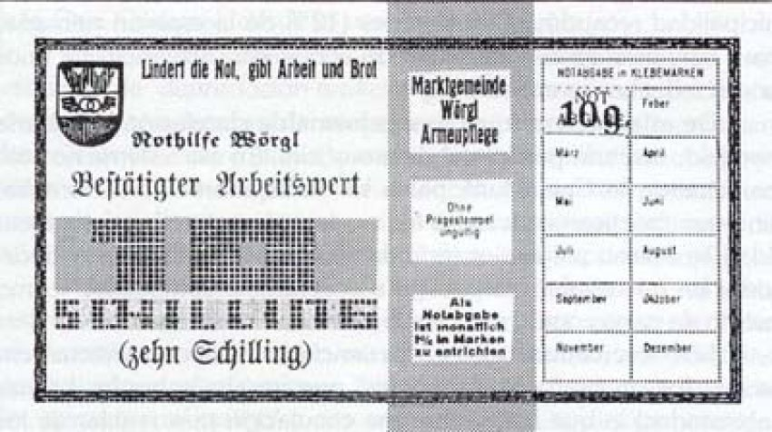
図 1 ヴェルグル市労働証明書 http://www.lietaer.com/2010/03/the-worgl-experiment/
ヴェルグルの減価する労働証明書は反響を呼び、近隣各国で発行が相次いだ。実際には１３か月後にオーストラリア政府が政府紙幣保護のために発行を停止させている。同種の恐慌時の債権は米国でも発行され、３０００種類以上になったとされる。米国ではスタンプ通貨と呼ばれ、経済学者からの支持もあったが、当時のセオドア・ルーズベルト大統領が発行を禁止し、ニューディール政策での経済再建を進めた。
「老化する貨幣」は貯めると損をする仕組みを埋め込んだところに仕組みの動力源がある。お金にまつわる世界の不幸はお金を貯め、貯めておくと、ひとりでに増えてしまう利子にあるとする考え方だ。
利子によって生み出されたのが、数人の富豪による世界資産の寡占だ。世界の総資産の半分は８人の資産家に集中しているといわれる（貧困撲滅ＮＧＯのオックスファム試算）。資産家の順位付けで有名なフォーチュン誌の公表試算値では、世界の資産家の１位から８位までの人の資産を合計すると２０１８年度には７０００億米ドルになる。世界の総資産は１兆５０００億米ドル程度と試算されていることになる。
彼らは、世界で上位８番目に幸せでも愛されているわけでもない。ただし、彼らは世界最大の篤志家でもあり、多くの寄付を行っている。２４年連続世界資産家順位１番だったビル・ゲイツ氏は資産の９９％を寄付している。
利子の力によって、持てる者は何もしなくても資産が増えてしまうのだ。２０１８年に所有資産１位となったジェフ・ベゾフ氏の１６００億米ドルの資産は、株式市場の暴落でもなければ次の年には利子によって１８００億米ドルになる。
１９７２年に米ドルと金の交換保証がなくなり、通貨は無限に創造できることとなった。特に２００８年のリーマンショック以降、各国政府が通貨供給を増大させた。供給された通貨は無理やりにでも融資されて、国や企業、個人の借金となっていった。
現在、世界の金融負債は２５０兆米ドルといわれる（国際金融協会ＩＩＦ）。一方、稼ぎに相当するＧＤＰは８０兆米ドルだ（ＩＭＦ）。世界は、年間収入の３倍程度の借金を持っていることになる。借金には利子がかかり返済しないと増えていく。５％の複利の場合、稼ぎの３倍の借金が４倍になのには５年しかかからない。年間収入の３倍の借金に利子が付き、さらに増えていく。世界は、稼ぎを守り、お金を使わず、当てもなくただ耐えている。
太陰暦に使用し、月の満ち欠けで季節を取り、日の出とともに目覚め、日の入りとともに床に就く生活は示唆を含む時制だ。ハイテクを活用しながらも、自然との共存、地球との共生に根差した生命力に富んだ未来はないものだろうか。
モモは街の人のために奪われた時間を取り戻してくれた。現代にモモは現れるだろうか。
第二章 成長、拡大の幻想
ダンサーが首に巻くニシキヘビはロボット。
「本物のヘビなんて高くて買えない」
ダンサーも人間ではない。皮膚はもちろん、骨格や内臓も備えた限りなく人間に近いロボットだ。生殖もできる。
核戦争後のどんよりとした雲に覆われ、雨が降り続く世界。日光はなく、昆虫を養殖してタンパク源を確保する。
移動体は、自家用車も装甲車も空中を浮遊して走行する。人々が恋焦がれた技術だ。
～ブレード・ランナー２０４９より～
西洋的ディストピア（暗黒郷）が我々の未来でよいのだろうか。
３０年前に公開され、２０１５年の世界を描いたスポーツカー型タイムマシンの映画はヴァーチャル・リアリティーを中心としておおむね予想どおりだったとされている。
技術者としてさまざまな思索を巡らせた二十世紀マサチューセッツに生きたバックミンスター・フラーは地球を「宇宙船地球号」とたとえた。フラー曰く「高度に設計され操作マニュアルなしでも人類の生命を２００万年にわたって維持し続けてきた我らが宇宙船地球号」と。宇宙船地球号は乗客が規定数を超し、難破寸前となっている。宇宙船地球号の修復は間に合うか。
われわれは、どんな未来になってほしいのか。
コンピューターの進歩は人間の知能がＡＩに勝てなくなる世界を予想させている。現実に、チェス、将棋、囲碁までもがコンピューター優位を達成してしまった。
すでに馬に乗れる人は少ない。１００年前は誰で乗れたのに。自動運転が広まれば、運転も急速に忘れ去られてしまうだろう。乗馬クラブのように、サーキットに行かなくては自動車を運転できない日もいずれ訪れる。
いずれ、論文を検索したり、レポートをまとめるような人間がやると大量の時間と間違いを犯してしまう行為はコンピューターにとってかわられるだろう。すでに医療の診断は医師よりもコンピューターの方が確度が高くなっている。
都市への過剰な集中はなくなるべきだ。我々の未来は自然に近いところで生活し、自然を傷めない世界だ。競争よりも共生、より精神的な充実感がある未来であってほしい。それは禁欲的な精神世界の追及でもない。むしろ、ばかばかしさにかこまれた日常だ。お笑いの世界と自然共生の世界が両立できるのがいい、博徒の聖地ベガスや性都パタヤ、魔窟東莞のような猥雑さも根源的に必要だ。
森の中で何百万年も生きて、わずか数万年だけ森を抜けだした人類にとって都市は過渡的な居場所だったのではないか。都市が生み出した産業と技術を持って、あるいは一度捨てさって、新たな居場所を作ってはどうか。
都市の便利さ、快適さを追求するだけでは人も地球も疲れ果ててしまう。進歩しない力、合理的でない力、たとえば、ばかばかしくて力がぬけるお笑いのような力が必要だ。地球が生命体なら笑いが必要だ。笑えガイア、ゲラゲラ笑え。
１９７２年に『成長の限界』というレポートが出され、世の中にインパクトがあった。改訂版、続編も出され、国際的な会合も何度も開かれた。２００６年には、アル・ゴア元米副大統領やレオナルド・ディカプリオなど著名人が応援する『不都合な真実』が公開され世界中で温暖化ガス削減が盛り上がった。毎年開催される気候変動枠組条約締約国会議（COP）の粘り強い活動には頭が下がる。こうした活動は脈々とつながり、変化を起こすエネルギーを蓄積し続けている。
しかし、資源を大量に消費する社会はなかなか方向を変えられない。自分自身が行動を変えないこと見れば、世界の趨勢もおおよそ察しが付く。
近代化、とりわけ、経済や産業の活動は、自らに都合のよいことを「効率」や「生産性」という文脈の中で、それらを「増大・強化」することを追求してきた。その過程で出てきた負の影響は「外部不経済」として事後調整するという基本的な方程式を仮説した。この枠組みは作動していない。イグノーベル賞級の飛んでも発明だ（注：イグノーベル賞にも見るべき発明、発見は多々ある）。
このツケは、２０５０年に世界のＣＯ２を８割削減する必要があるというかつてない巨大なものに膨れ上がった。外部不経済のツケの清算ができないのだ。老人は知らんかをして逃げ切りたい。中年は責任を老人に押しかぶせたい。若者は聞こえないふりをしていたい。主体性なく新たな救済を待つ終末的状況だ。
なぜ、危機にあたっても行動を変えないのか。われわれは大地が廃れれば、自分自身も生きえないことがなぜわからなくなったのか。なぜ、自制できないのか。法律でも規制でもなく、本能が本来の機能をとりもどせば行動を変えるのではないか。
地球を守るという自覚の下、諸対策が打たれ、従来の技術による見せかけの解決、「効率」と「生産性」を追求するアプローチ自体が疑問視されるようになってきている。これは、我々自体の価値観やライフスタイルを「項」に付随する「係数」ではなく「項」自体にすべきであるということだ。われわれの存在や行動を大きく変えなくてはならないという選択肢をつきつけられている。
外部不経済事後清算の方程式は間違っていたのだ。
その変更を、「前近代への回帰」や、「西欧と対立する形での東洋」に求めるのではなく、もっと賢く土台を設定することはできないか。過去と現在、西洋と東洋を正反合する思考自体に欠陥を見出したからだ。より「生命現象」に近づく方向性はないか。「知育」、「徳育」、「体育」でいう体の部分へ焦点を当てた方向性に光は見えないか。新たな土俵であらたな方程式を生み出すことはできないか。
「生命現象」への接近を考えると、実は当たり前のことを同時に認識することになる。それは、生命体である我々自身が、それ自体を求めているということだ。我々の本来の欲求に合致する方向があるのではないか。近代、経済、産業という「人工世界」が、我々に相当な負荷を与えている。その中で、深刻なストレスが蓄積しているという事実を直視するということだ。本来であれば、発生しないような疾病、疾患や異常行動、中毒の蔓延は見過ごせない状況になっている。我々の体がこの状況を感じている。
この感覚のなかで産業革命自体を破壊するという動機が形成され、第０次産業革命なる世界観が浮き上がってきた。
ギリシャが栄えた時代、今、カラカラに見えるパルテノンの丘は森林におおわれていたという。文明が森林を消滅させてしまったのだ。人類が本来帰っていくべき森林を使いつくしてしまったのだ。森林を使いつくしてしまった悲劇にはイースター島の物語もある。
南米に近い太平洋の孤島に物語がある。
そこは美しい森林におおわれた小さな島だった。数十人のポリネシア人がたどりついたのは欧州ではローマが隆盛し、中国では三国が覇権を争う時代。
外敵のない豊かな自然環境の中、文化が発展し、街の守りを託された石象が多数建立された。石像は技術を凝らしたさまざまな道具によって作られていった。その島は、今はイースター島と呼ばれ、石像はモアイ像といわれる。
島の人口が増えるにつれ森林は伐採され、雨水は溜まるところを失い耕地が減少した。人口はさらに増え続け、限られた食料を巡って部族間の抗争が頻発した。人々は発達した技術で武器を作り、奪い合い、殺し合い、すべてを失った。最後にはカヌーを作って漁に出る一本の丸太さえなくなってしまった。そして、人々は文明を失い、原始の生活に戻った。大航海時代に欧州人が島が発見した時、住民は引き倒されたモアイ像の前でたき火をしながら祈りをささげていたと伝えられている。
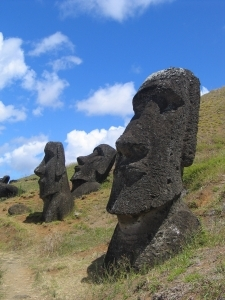
図 ２ モアイ像 イースター島「ラパ・ヌイ国立公園」 Wikipedia
一方、イースター島よりは１０００倍程度大きいアジア大陸の東の端にある島国でも、１６世紀の戦乱の時代と続く泰平の時代の初期には森林の枯渇が進んだ。戦乱の時代には各地に城が建てられ、海を渡って隣国に攻め入るほどに船が作られた。戦乱後には１００年ほどの間に耕地が２倍になるほどに森林が開墾された。
社会が安定すると文化度が高まり、製塩、製鉄、製陶などのために大量の木材が燃やされた。そのため、各地で森林の伐採が加速し、洪水が頻発、耕作不適地が増加した。
この島国は日本。古代史では、日の上る国と自称していた誇り高き国だ。近代には西欧の芸術に大きな影響を与えた文化を発展させた国だ。
当時の為政者が偉かったかどうかはさておき、ことここに至って強力な森林保護政策が施行された。幕府、諸藩の政策は「留山・留木」の策として伝わっている [1]。秋田スギで有名な佐竹藩では木を切り出す山を３０年ごとに順番に移していく「番山制度」を取っていた。欧州の農地で行われていた二圃式、三圃式に似ている。一方で、木曽ヒノキで有名な尾張藩には盗木を死罪とする厳しい罰則もあったようだ。日の本の島国もイースター島と同じ運命をたどったかもしれないところを紙一重で引き返すことができたのだ。
メソポタミア、エジプト、黄河、インダスの古代四大文明は農業によって栄え、農業が大地を枯らして滅んだとされる。本来、地球と共生しなくてはならない地球上の生物の中で、おそらく人類だけだが、地球の悲鳴を聞き漏らし、悲しい運命に向かうのではないか。
明日は今日よりよくなるという考えが進化、進歩の概念の前提にある。技術の進化、進歩が地球全体の許容量を超えて荒廃を生むというのがディストピア（暗黒郷）の論理構造だ。聖書の終末論の影響も大きいのだろう。仏教にも末法思想があるが、念仏を唱えることで救済されることが提唱されている。アジア的には輪廻の思想があり、一方向的な進化、進歩ではなく何度も元に戻ると思考する。
アジアの思考をすると未来はもと居たところとなる。我々の日々の生活、進化し、進歩しているように思いこんでいる日常は、実は、もと居たところより退化し、後退しているのかもしれない。アジア的には退化し、後退しても、元に還ることになる。つまり悪くなっても、また元に戻るのだ。
輪廻や円環の思考は、直線的、機械的な思考の対概念だ。２つを統合すると螺旋という方向感を持つ円運動の概念が見えてくる。
進化と進歩、退化と後退は二者択一ではなく、まだら模様になっている。良くなるところもあれば悪くなるところもある。輪廻の思想でいったん良いところも悪いところもゼロに戻してしまう方がすっきりする。進歩、進化と輪廻、円環は融合できるからだ。
例えば、日本の歴史でみてみると、戦国時代は人権思想から見れば最悪の時代だ。日本中で殺し合った時代。しかし、技術も商売も盛んだった。それを江戸時代がゼロに戻した。閉ざされた鎖国の中、文化が爛熟した。明治、大正、昭和初期と西洋化が進むとともに心の面ではどんどん悪くなって、終戦でゼロになった。日本の文化を忘れ、欧米流を安易に取り入れた現在は混乱の時代。ゼロ化する方がよいかもしれない。ただし、表面的には見えづらくても、螺旋のように長い年月をかけて良い方向に向かっていることもあるはずだ。
人間として向かいたい方向はおぼろげにあるのではないだろうか。臨死体験者が共通して語るイメージは、花と川。花に囲まれ、川を渡る光景を目にするようだ。これは、生物学的に立証できることではなく、日々の生活の中で蓄積さえる死生観に民族、地域を超えて共通性があるということだろう。
同じように、未来への希望についても共通性がありそうだ。共通するイメージの１つは空を飛ぶ車だ。人類の飛行についての渇望の表れといえるだろう。馬を駆って大地を駆けた記憶と鳥の自由さの合成物だ。『ブレード・ランナー』でも、『バック・トゥ・ザ・フューチャー』でも『風の谷のナウシカ』でも描かれた共通イメージだ。人は自由に空を飛びたいのだ。
もう一つはよみがえりだ。医学が発達し、いつか死者がよみがえり、不老不死を手にするのが我々の夢だ。エジプトや南米の王族のミイラは典型だ。復活は繰り返し、奇跡として描かれてきた。呪術的信仰にも多く登場する。日本ではやった『二十一世紀少年』も死者のよみがえりをストーリーの根幹に置いている。
他にもゆるやかな共通記憶はある。母の記憶、温かさの記憶、光の記憶。共通記憶は幸福に連なるものと思える。俗世のけがれを逃れてたどりつく心の安定こそ我々が究極に求めるものではないだろうか。
我々のかすかな記憶の中に残るいつかみたことがある未来。こころのどこかにイメージされている未来。それが目指すべき未来ではないだろうか。
昔はムラ社会であった。ムラでは、一人一人が貸し借りをもとに信頼をよりどころとする社会に生きていた。ムラ同士が戦うことはあって、ムラ同士を束ねるより大きな権力は存在しなかった。ムラ同士の戦いでも女、子供は保護されるのが通例であった。
それが、ムラとムラの交易が始まり、富めるものと貧しいものが生まれた。関係を持つ範囲が広がり、信頼は薄まっていった。肌の色が違い、信じる神が違うとき、戦いは抑制を失った。
ここに法律が生まれ、通貨が統一つされていく。法律や通貨を定める権力が生まれ、権力を守るために軍備や警察が持たれた。権力はいつしか、運営を賄うために徴税を行い、配分まで行うようになった。権力は国家という無慈悲な仮想人格となっていった。
国家には識者が集い、統治が行われた。経済という概念が重視され、財中心の運営が進められた。西洋においては統治を是とする背景思想に、デカルト以降の近代合理主義があった。オカルト的な総合化を描いていたデカルト自身の思索からは離れて、全体は個に分解できるという概念が世界を規定する潮流となっていった。
国家は拡大を続ける手法を更新し続けた。第一次産業革命は農業革命とも呼ばれる。第二次産業革命は蒸気機関を中心とした機械的自動化を推し進めた。第三次産業革命はコンピューターとネットワークによって成し遂げられ、世界の景色を一変させた。第四次産業革命はいまだ、定義が定まらないものの、欧州、ドイツはコンピューターとネットワークの革命の亜流を次世代の産業構造と唱えた。異論も多い。
産業革命は人類の生活を向上させる一方で自然破壊を大きく進めた。農業によって土地は荒廃し、蒸気機関は、鉱物によって農村を没落させ黒ずんだ都市世界を作り出した。コンピューターとネットワークの発展と同じくして、「成長の限界」が唱えられたが、世界の趨勢にはならず、自然破壊は止まっていない。
第四次産業革命は第三次の亜流であるＡＩとロボットではなくバイオテクノロジーという技術革新ととられることもできる。コンピューターとネットワークの進歩の亜流よりは「層」あるいは「質」の転換があり、概念として理解しやすい。しかし、バイオテクノロジーも遺伝子組み換えとそれに呼応する農薬や肥料の大量の散布を巻き起こし自然の崩壊を加速している。
精神を病む都市生活者の増大や先進社会での極度の出生率低下、ＣＯ２濃度の上昇と仮説される気温上昇及び異常気象、コンピューターとネットワークの発展によって生じたバブル的金融価値のとめどない増殖。我々の眼前にはあまりに無残な社会が広がる。これらに対して世界各地で異論、疑問、反論が巻き起こってきた。近代を支えた経済学の中でも対抗軸が模索されている。
しかし、この動きは社会の疲弊や混乱を収束する力にはなっていない。生命現象の同時性（動的平衡論）や関係性を中心とした認識論（オートポイエーシス）も進んだが、本質原理への到達はあまりに遠い。
０次産業革命の議論において、仮説として取り上げたのは「動的平衡論」や「オートポイエーシス」の考え方だ。生命現象における生と死の不可分性や分散的な主体行動への着目だ。社会のあり様、人間が作り出す社会インフラや、建造物、移動体、衣服や食物に生物的不安定な平衡と自律的な調和を持ち込むことに未来への着想をもった。
また、デカルト以降の近代合理主義の合わせ鏡として、全体性や合一性に重きを置く、インド、中国発祥の「禅」、中国、日本に広まった「道」に着目した。
ユーラシア大陸を西に行くほど自然環境が厳しくなり、東に行くほど森を中心とした豊饒な環境があることともこの合わせ鏡には関係しているようにも見える。ユーラシア大陸を西に突き抜けて新大陸に構築された米国的経済至上主義は、現代の混乱の象徴ともいえる。ユーラシア大陸を東に少しだけ飛び出した島嶼地域日本の社会が直面する極端な少子高齢化や社会的停滞感にも何かの示唆を感じる。
中世の日本に「惣」という国字が生まれた。地域共同体を示す言葉だ。「惣」という字は物と心を合わせている。そしてそこでは公権力に対抗して自治が行われていた。興味深い文字の作りと活動だ。
０次産業革命の行きつく先は、遠い過去への回帰であるともいえる。第一次から第四次までの産業革命を手放すのではなく、包含し両立する社会のあり様が我々の未来ではないだろうか。権力や国家、財への偏重から解き放たれた、より自律的で、より分散した仕組みの実現を目指したい。
合理性だけでなく、混沌や乱雑を受け入れる新たな平衡状態を求めることはできないだろうか。アメーバのごとく、一部が感じた刺激が徐々に周囲に伝わっていく原理を社会にも取り入れてはどうだろうか。
未来は過去と循環しているのではないだろうか。
第三章 ＧＤＰの不都合な真実
地球温暖化が引き起こしている世界各地での海水面上昇や異常気象を描いた『不都合な真実』は元米国副大統領という強大のアイコン（象徴的人物）によって世界中に紹介され映画にもなった。それでも世界は変わらなかった。なぜ、我々は、地球温暖化を真剣に受け取らないのか。
マーケティングのことを悪く言う人は少ない。みんなマーケティングは大事だと言う。むしろ、実直にモノを作る人達はしばしばマーケティングに興味がないとして批判される。その批判の主張するところは「いくらいいものを作っても伝わらなければなんの意味もなさない」というものだ。
こんなことも言われる「経済が拡大しているときは、モノが足りないので作れば売れた。社会が成熟してからは顧客ニーズにあったモノでなくては売れない。顧客ニーズを発見し顧客の望みをかなえることがマーケティングだ」と。
そういう考え方もあるだろう。では、社会の成熟と経済の拡大、拡大しながらも少子高齢化に向かう世界経済、そして温暖化による存亡の危機を迎える地球に直面してマーケティングは何をしてくれるのだろう。
必要な人に商品の良さを伝えることで取引が成立し経済が活性化する。しかし、マーケティングと称して都合のいいことだけを伝えてはいないだろうか。たとえば、製品の成分については伝えているかもしれない。しかし、そのモノができるまでにどれだけの温室効果ガスを排出し、金属資源を掘り出したかは伝えていない。１つのモノでみれば微々たるものかもしれない。それについて、買う人がわかりやすいように、製品群全体での１年間の温室効果ガス排出量や使用金属資源量を伝えているだろうか。採掘現場の過酷な労働状況を伝えているだろうか。
もっと言えば、原発の廃棄物処理にかかるコストは計上されず一部分だけコストを計算して電気代が決まっている。そのことは伝えられているだろうか。
そうした買うモチベーションが下がることを伝えることはマーケティングの範囲外のことなのだろうか。だとしたら、マーケティングは大したものではない。買いたくなくなるいわば不都合な真実まで含めて伝えて、取引を成立させるなら、「マーケティング、おまえなかなかやるじゃないか」となる。
マーケティングはマーケットから来た言葉だ。概念を拡大したとしてもやはり中心はマーケットでの売り買いに関することだ。範疇としては経済に大きくかかわる概念だ。少子高齢化は売り買いではなく、生殖と寿命に関すること。経済よりは社会に大きくかかわるテーマだ。温暖化や資源枯渇は生態系や地球に関すること。我々がいま直視しなければならないのは経済、社会を超えて生態系や地球を対象にする課題だ。
用語をカタカナにして名詞に進行形語尾をつけることに論理性は乏しいが、マーケットのためのマーケティングが輝いた時代があったとすれば、社会（ソサイエティー、ソーシャル）のためのソーシャリング、地球（アース）のためのアーサリングのような概念が高められていく必要がある。ガイア論はまさにそれだ。
マーケティング界のスーパー・スターだったピーター・ドラッカーとフィリップ・コトラーはどちらも晩年にはソーシャルについて研究の対象を移した（ドラッガー氏は鬼籍、コトラー氏は存命）。期を同じくして関心を集めたのがガイア論のラブロック氏だった。３氏は交わることはなかった。もし３氏が交わっていれば新しい学問が生まれていたかもしれなう。ドラッカー氏やコトラー氏が研究し支援を続けたＮＰＯ（Non-Profit Organization：非営利組織）は営利を追求する企業では社会を正しい方向に導けないことへの１つの提案であり、現在最も有力な社会問題の解決概念ともいえる。
ビジネススクール（経営大学院）において、マーケティングはファイナンス（財務論）と並ぶ２大人気専攻分野だ。同じかあるいはそれ以上の関心と労力がソーシャリングあるいはアーサリング（ガイア論）の分野に割かれるべきではないだろうか。
ソーシャリングとアーサリングに近い学問分野には文明論がある。文明と非文明の違い、文明の発展などについて多くの論考が提示されている。フランシス・フクヤマ氏の『歴史の終わり』（民主主義による文明発展の完成）、サミュエル・ハンティントン氏の『文明の衝突』（西洋文明とイスラム文明の衝突）などが有名だ。近著ではジャレッド・ダイヤモンド氏の『銃・病原菌・鉄―１万３０００年にわたる人類史の謎』が話題になった。
日本人の著作には星野克美氏の大著『地球環境文明論―文明革命のために』がある。
文明論に環境を冠して、環境文明論といわれることも多くなった。日本の大学でもいくつかの講義が試みられている [29]。
原価とはモノやサービスを生み出すためにかかった費用のこと。きっちり原価を計算して利益を正確に算出することが経営の根幹といわれる。しかし、原価に組み込まれていない費用が大量にあったとしたらどうだろうか。そこから出てきた経営成果は粉飾決算ではないか。
誰でも同じものなら安い方を買う。なので、売る方は安く作る。高くすると売れなくなるからだ。これだけ資源が枯渇してきているなか、リユースやリサイクルを進めるのがいいことは明らかだ。それなのに、なかなか進まない。新品の材料や部品を買ってきて作る方が安いからだ。新品の材料の方が安いのは、地面から掘り出す原価しか計上していないからだ。
現在世界中で行われている原価計算では地球の永続のためにかかる費用を計上していない。地球を永続させるためにはリユースやリサイクルが必要だ。しかし、リユース品やリサイクル品は新規生産品より高くなるのが一般的だ。一度、加工したり、変性したりしたものを元にもどすことに手間がかかるからだ。また、リユースやリサイクルしやすい設計をした製品は新品であっても、リユースやリサイクルをしない前提で設計したものより高くなってしまいがちだ。表面的に安く作ったとしても、自然に返すのに膨大な費用がかかる作り方でよいのだろうか。
本来は、掘り出した材料にリユースあるいは地球に戻すという意味でのリサイクルの原価も加えておく必要がある。現実には正しい原価を使っている人など周りにいない。それをとがめる法律もない。当然誰もやらない。
現在、住民であればゴミを回収してもらうことができる。大型のものや特殊なものであっても少額の引き取り料で回収してもらえる。しかし、この仕組みには組み込まれていない費用がある。
ゴミ処理場での焼却が放出するガスの大気への影響や、海を埋めたてることでの影響は費用として、含まれていない。もちろん、焼却や埋め立てはできるだけ地球に害が及ばないように行われている。しかし、焼却にともなってガスが出るし、埋め立てれば土壌に影響がある。ゴミの回収にはこうした現在は小さくても長く地球に影響をもたらすことになる費用が組み込まれていない。
地球にかかる負荷を減らすための費用は膨大だ。これを正確に含めれば、新品であっても価格はずっと高くなる。ごみを地球に負荷をかけない方法で回収、処分する費用を含めれば住民税は相当高くなる。
われわれは、原価計算の規則のもと、こうした費用を先送りにすることにしている。
日本では家電や自動車にリサイクル法が施行されていて、破棄する際に分解する費用を消費者が負担することになっている [i] 。各国にも同種の法律がある。
注i：日本の家電リサイクル法では、エアコン：１，６２０円、冷蔵庫１８１Ｌ以上：４，９６８円、液晶・プラズマ（１６型以上）：２，９１６円、洗濯機・衣類乾燥機：２，５９２円、自動車１台あたり６０００円から１８０００円程度、となっている。
しかし、これは、家電はごみと一緒に捨ててはいけませんよということを課しているだけだ。掘り出してしまったもの、元に戻せないように加工してしまったもの（たとえば原油から作ったプラスチック）が地球に与える害を相殺することに必要な費用は組み込まれていない。
原発の廃棄物の処理費用は電気代の原価に一部しか組み込まれていない。ＥＶ（電気自動車）の電池リサイクル費用は、車体価格に含まれていない。
リユースやリサイクルの原価を無視してしまう限り、新品がどんどん売れてしまう。新品が売れれば、温室効果ガスや金属資源の消費が増え続ける。
行き着くところ、企業の利益を付加価値とみて合算していているＧＤＰ（国内総生産）も実態としては意味がないということになる。
仮に、新品を売ることには高い税金が課せられるとしよう。すると、新品よりリユース、リサイクル品の方が安くなる。そうなれば新品の売れ行きは落ち、リユースやリサイクルしたものが売れるようになる。全体に物価水準は高くなるだろう。物価が上がれば消費は小さくなる。結果、ＧＤＰは今より小さくなる。そのとき、我々は今のようにはモノをたくさん買わない、ある面正しい、少しさびしい社会を迎えることになる。
リユース、リサイクルが定着すれば、リユース、リサイクルしやすいモノづくりがされるようになる。設計の段階から、長く直しながら使うことを思想とするからだ。そうなれば、たとえば自動車の場合、自分で低燃費のエンジンに載せ替えて、親から子、子から孫と代々受け継いでいく社会になるかもしれない。それが正しい姿ではないか。
これからのモノづくりは作るだけでなくて、リユースやリサイクルの生産性を競うようにならなくてはならない。リユースやリサイクルの生産性を上げて原価を小さくすることで、リユースやリサイクルが当たり前になり、新品を買うのは、浪費家だけとなるのが健全な方向ではないか。
会計や税法は規則によって数値が変わる。規則が国ごとに違っていると比較しにくいということで国際的な統一規則作りを進めてきた。ＩＦＲＳ（International Financial Reporting Standard:国際財務報告基準）などがそれにあたる。
たとえば、企業を買収する際は、企業の価格であるべき純資産と大きく違う額で売買されることが多い。その差をのれん代と呼ぶ。こののれん代を分割して年々に消していくという考え方もある。反対に消していかないという考え方もある。企業ごとにのれん代の扱いが違うと確かに比較の際にいちいち確認しなくてはならない。
一般に、お金の動きを中心に記載する損益計算書（ブロフィットット・ロス・ステートメント）はごまかしにくい（それでもまぎれがあるが）。資産という考え方を含む貸借対照表（バランスシート）には、過去からの経緯や未来の予想から資産の額が変わってしまう面がある。たとえば、ずっと昔に買った土地が買った時の価格で計上されることで、現在実際に売却できる額との差が含み益や含み損となっている。先ほどののれん代も同じくだ。
企業の価値は、純資産に含み益、含み損を加味した時価総額で計算できるという考えかたもある。現実には、損益計算書や貸借対照表には、地球環境への負荷などの外部不経済は含まれていない。
魚を輸入するときのことを考えてみよう。表面的な魚の値段は輸入物の方が安いとしよう。魚の値段には輸送用の船のガソリン代はふくまれているだろう。しかし、長い距離に渡って輸送船のエンジンを回してＣＯ２を吐き出したこと、それを相殺するＣＯ２の吸収にかかる費用は計上されない。近隣で取れた魚を食べる方が地球環境への負荷は少ないことは原価には反映されない。
企業会計や税法に、こうした計算規則上の紛れや、外部不経済が含まれていないことは、承知されている。これに対処するため、「一般的に認められている会計方針（GAAP: Generally Accepted Accounting Standard）」という考え方で計算が行われる。いままで広く使われている基準で計算しましょうということだ。これは一見、正しいように見える。
一般に認められている規則での計算を求められると、今まで認められていないものを取り込むことは難しくなる。環境への負荷がまさに取り込みにくい。都市と地方で税法を変えることも取り込みにくいことの１つだ。行政区ごとに税金を変えることはできるが、都市に住む人に重税をかけ、地方に住む人にマイナスの税金を提供することまではなかなかできない。
この考え方の前提には、たとえ間違った規則であっても、急に変更するよりは、安定している方が人々は安心して信頼を寄せられるというものがある。確かにそうだ。だが、変更したい場合であっても変更は思いのほか難しい。
税法には一般的に認められている会計方針にあたるものはない。また、企業を誘致するために、税金を下げることが頻繁に行われる。企業が税金が高いということで出て行ってしまう地域は税収が不足する問題に直面する。０次都市も税率の設定を考えなくてはならない。
資源・環境ジャーナリストの谷口正次氏は『経済学が世界を殺す』（扶桑社新書）で新書１冊を使って成長中心の経済学に渾身の批判を浴びせている。谷口氏は、エルンスト・シューマッハーが打ち出したという「自然資本」という考え方にあるべき社会の方向性があるとしている。
谷口氏が構想している自然資本は、大きく生物圏、地核圏（鉱物資源や水、土壌など）、大気圏となっている。人間は生物圏の一部分にしか過ぎない。また、人工物は自然資本には入らない。従来の経済学は自然資本を無視して、人工物の生産のみを対象としてきたという見方もできるだろう。見方を変えると、自然資本を維持し、増やしていくことが社会の目的であるべきだったのかもしれない。思えば、農業、漁業、林業、工業、どれも、自然から収奪ばかりしてきた。土地を肥やそう、魚を増やそう、森を豊かにしよう、資源を増やそうとは考えられてこなかった。
生物学の１つの仮説として、生命は崩壊と生成が極めて密接に起こる現象という考え方がある。青山学院大学の福岡伸一教授は、これを動的平衡と呼んでいる。生物は同じ個体に見えても数日のうちのほとんどの構成物（原子や分子）が入れ替わっているという。自然物についても同じ現象が散見される。湖や川の水はとどまることがなく、絶えず構成を変えているがそこにある。ギリシャの哲学者ヘラクレイトスの言葉として「同じ川に入ることはできない」と伝わる。ヘラクレイトスは後のアリストテレスによって「自然哲学」派に分類された詳細が伝わらない謎の哲学者。
生物に関しては、また、別の見方で自己組織化（オートポイエーシス論など）という考え方がある。生物は、自己を自己の構成物の関係から自律的に生成していくとい見方だ。自己自身もより大きな集団の中では構成物として自律的に他者と関係をつくり、調和を実現する。調和に至る過程には偶然が大きく影響する。
動的平衡と自己組織化を合わせて考えると、生物は、たゆまぬ崩壊と生成の中、関係性を中心に全体の調和を見出すことができるものとなる。あるいは、それができることが生命現象の本質ともいえる。人類はなぜ地球環境と調和できないのか。
オックスフォード大学のケイト・ラワースは『ドーナツ経済学』（河出書房新社）で、ドーナツの外側は成長が環境を破壊してしまう領域、ドーナツの内側は欠乏が社会を崩壊させてしまう領域としている。経済が目指すべきはドーナツの外と内の間の身の部分に経済活動を調整することだ。ラワースの考えは、アダム・スミスなどの古典経済学者が好んだ道徳論に近い考え方だ。道徳論が経済学に組み込まれれば自然資本に目を向けたかもしれない。時計の針は戻せない。
余談だが、禅宗の「空」の説明には、ドーナツの内側の空間は、ドーナツが存在するときは「空」として認知される。しかし、ドーナツを食べてしまうと、まさになくなってしまう。ドーナツというものによって「空」が「空」として認知される。ケイト・ラワースのドーナツの内側にも似たところがある。欠乏は、経済が存在している間は、欠乏として認識されるが、経済がなくなってしまえば欠乏ということ自体も認識されなくなる。経済がなくなってしまうということは社会自体の崩壊なのか、自然資本に根ざす新たな社会観の創成なのか。
経済が、生物だけを対象にできるなら、動的平衡や自己組織化の調和の中で、自律的にドーナツの身の部分に落ち着くことができたのだろう。
現実の経済では、自動車を作り、道路を作り、大量の衣服を作り、家を作り、ビルを作りという行為を行っている。これらのものは生物ではない。何百年が経ち、朽ちることはあっても、生命現象として調和を持つことは永久にない。
我々の世界は人工物にあふれている。深海の魚たちの胃袋の中にまでペットボトルの残骸が堆積している。自動車は稼働率が５％であるのに、毎年新たに１億台販売される。クローゼットには何年も着ることもなかった衣服がハンガーのスペースに窮するほどに押し込められている。地中を掘り起こし、瓦礫と残飯で埋め戻し、コンクリートで蓋をした上に緑地公園が造営されている。処理の方法がない使用済み核燃料が中間貯蔵という名目でほぼ永久に寒冷地の浜辺に積み上げられている。
蓄積し、生物圏に大きな害をもたらす大量の人工物を取り除く圧倒的なテクノロジーが登場しない限り、ドーナツの外側にこぼれ落ちた社会に調和は訪れそうにない。
第四章 間違えた進歩を方向修正
金属こそ人類の進歩を実現した原石だ。しかし、金属がＣＯ２を生み出してきた。
ドイツ帝国（プロイセン王国）の宰相ビスマルクは「鉄は国家なり」と述べて鉄鋼生産による国力強化を進めた。ドイツ西部のルール工業地帯は第二次大戦まで鉄鋼業を中心に欧州最大の工業地帯だった。大戦後、巨大企業連合は解体された。再建が進められたものの世界鉄鋼生産でのかつての地位は取り戻せていない。現在は中国やインドの鉄鋼メーカーに押され、ドイツ最大のテッセン・クルップ社が世界２１位という状況だ。
鉄に限らず金属は掘り出すのに大量のエネルギーを消費する。地中深く目当ての金属がそのまま埋まっていることはない。大量の岩石を掘り出してそのなかからわずかに含まれている目当ての金属を取り出さなくてはならない。使用される金属の何十倍、何百倍もの岩石を掘り出すことにエネルギーを使いＣＯ２を発生させる。
また、金属の中で圧倒的に使用量が多い鉄は鉄鉱石から銑鉄という状態にするために大量のＣＯ２を発生させる。鉄は、鉄の次に多く使われる、銅、亜鉛、マンガン、クロムの採掘量が年間１０００万トンほどであるのに対して、２桁多い２５億トンを採掘している [9]。
世界の粗鋼生産は２０１６年に１６億トン、日本はおよそ１／１５の１億トン強を産する [10]。鉄鋼生産からのＣＯ２排出量は日本で１．８億トン [11] と推計される。ただし、削減目標を共有していない企業が３％程度あり、それを含めると１．９億トンとなる。世界全体での鉄鋼生産からのＣＯ２排出量には確定値はない。日本の鉄鋼生産は世界で一番ＣＯ２排出が少ない点を考慮すると世界全体ではおよそ２５億トン程度と考えられる。ちなみに、日本の鉄鋼業界は、省ＣＯ２での鉄鋼生産技術を世界に展開することを進めている。
また、鉄鉱石から鉄を作る方法（高炉といわれる）が１トンの鉄を作るのに２トンのＣＯ２を排出するのに比べ、すでにある鉄から再生する方法（電炉といわれる）の方は０．５トンのＣＯ２の排出となるといわれている。掘り出して作るのと再利用するのとでは正しい比較ではないが、可能な限りは再生鉄の利用を進めたい。再生鉄は既生産量が多い先進国での活用が多くなる。
再生鉄には不純物が含まれるなど制約もあり、現在の日本でも再生鉄は全鉄鋼生産の２０％程度にとどまっている（日本鉄鋼連盟生産統計）。鉄は国家なりといわれ、国を代表する企業が高炉を行っていることもあり、なかなか再生鉄の利用は拡大しにくい面があるようだ。日本でいえば、新日鉄住金、ＪＦＥ、神戸製鋼などが高炉メーカーだ。雇用などの社会的影響を考えると鉄づくりによるＣＯ２発生からはのがれられない現実がある。
古来から、鉄と森林は切っても切れない関係にあった。司馬遼太郎氏が説く、古代山陰地方に栄えたであろう砂鉄の文化（おそらくは朝鮮半島からの渡来文化）は日本の湿潤な気候に負うものとされる。朝鮮半島では砂鉄からの製鉄で森林が切り崩され復元できなかったと推論している。森林を失った朝鮮半島から鉄の技術者が渡来し、鉄の生成技術を伝えたということだ。スサノオノミコトのヤマタノオロチ退治の伝承は、砂鉄を操る渡来集団と畿内の日本古来の集団との争いとする解釈もある。
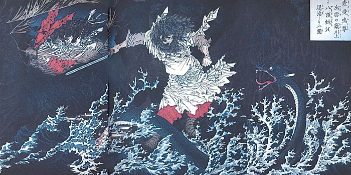
図 ３
スサノオノミコトのヤマタノオロチ退治
日本略史・素戔鳴尊、月岡芳年、Wikipedia
砂鉄の製鉄に必要とされる木材の量にはさまざま推計がある。おおむね産出する鉄と同じ重さかそれ以上の木炭が必要とされる。
たたらの自然破壊についての試算は他ではみたことがないので、細かくなるが、興味ある方は以下を見てもらいたい。
島根県で復元されたたたら製鉄は伝統的に三日三晩で１回のたたらを行う。１０トン強の鉄を算出する１回のたたらに１３．５トン、約１へクタールの森林（樹木約３０００本）が必要となる [12] 。江戸期には年回６０回のたたらが行われ、森林の再生に３０年かかるため、１つのたたら場が１ヘクタールｘ６０回ｘ３０年＝１８００ヘクタールの森林を維持している必要があった。
昔の単位でいうと、１枚３００坪という田んぼが１０００平方メートルなので、１万平方メートルである１ヘクタールは田んぼ１０枚に相当する。１８００ヘクタールは田んぼ１万８千枚という途方もない広さになる。野球場１つはおよそ５ヘクタールなので３５０個分になる。
砂鉄を取るために山が平らになるほどに土砂を川に流したことも合わせて考えると史上最大規模の自然破壊が行われたともいえる。
ちなみに、島根県安来市に再興されたたたらは映画『もののけ姫』のたたらばのコンセプトイメージになったといわれる。『もののけ姫』でも自然と技術（人間）の対立が描かれている。
砂鉄からの鉄製造は世界史上ではまれで、古代文明の地域では小川の底や水辺に体積した土状の褐鉄鉱の利用から始まったのではないかとされている。たき火や山火事など何かの偶然で褐鉄鉱上で木が燃やされることで自然状態では酸化している鉄が還元されることを発見したのではないかという説だ。
ひとたび鉄の還元が発見されると鉄は青銅に変わって人類の欲望をかなえる魔法の杖（剣：つるぎ）として、英知を注ぎ込まれた。武器はもちろん、輸送、加工のために使われ鉄は文明の繁栄を支えた。そして、文明が栄えた地域からは、森林が消えどこも禿山となった。
鉄とＣＯ２は実は深い関係にある。鉄は枯渇するからだけでなく、ＣＯ２を増やさないためにもできるだけ採掘しない方がいい。鉄の採掘を最小に抑えて、すでに使ったものをリサイクルするようになれば、採掘と銑鉄化に使っていたエネルギー消費がなくなり大幅にＣＯ２の発生を抑えることができる。
２０１８年２月２８日、スペインの海岸にやせ細ったマッコウクジラの死体が打ち上げられた。体長１０メートル、体重６トン。
マッコウクジラは主にイカを主食とする。しかし、胃と腸の中から出てきたのは、ビニール袋や網、ペットボトルなどだった。重さ約３０kg。
死因は腹部の感染症である腹膜炎とされた。飲み込んだごみを消化できず、消化器が破裂したと思われる。 [17]
世界経済フォーラムの報告書 [18]によると、毎年少なくとも8００万トン分のプラスチックが海に流出。２０５０年までには海のプラスチックの量が魚を上回る計算になるという。
世界のプラスチックの生産量は１９６４年の１５００万トンから２０１４年の３億１１００万トンへと５０年で２０倍以上に急増し、今後２０年間でさらに倍増するとみられる。海洋に３％程度が流出し、残りは地上に堆積する。
生分解性プラスチックやプラスチック分解酵素の研究 [19]が進むがとても間に合いそうにない。プラスチックの利用を規制する動きは各地で進んでいる。ＥＵがプラスチック買い物袋（通称レジ袋）や化粧品にマイクロビーズ使うこと削減することを打ち出し、欧州の各国で利用削減が進んでいる。フランスでは使い捨てプラスチック容器と食器が全面的に禁止された。イギリスは、ペットボトルを含めたすべての使い捨てプラスチックの利用を禁止することを公表している。使い捨てプラスチックとは、コップや、ストロー、袋、綿棒などを指す。
日本のスーパーでは、プラスチックの容器（まさに使い捨てプラスチック）透明樹脂のラップでカバーをしたパックとして肉や魚が売られている。ドイツではこのパック方式が以前から問題視され、食料品の量り売り、容器のデポジット制（返却すると返金される仕組み）が浸透している。量り売りを定着させて容器を持参するのが本来ではないか。
世界最大級の自動車販売を誇るＧＭ社は、自動車産業の勃興期に、利益を投じて、路面電車会社を買収した。そして路面電車に置き換わったバスを販売した。ＧＭ社は罰金を払ったものの、路面電車会社の経営難を救ったという意味合いもあったようだ。そうはいっても、資本主義のえげつなさを示す例の１つだろう。
自動車、鉄道、航空機と普及が進むにつれて、我々の移動範囲は町から大陸、地球規模にまで広がった。特に航空機は、翼をもつという人類の積年の夢を実現した。何億台もの自動車が行きかい、何万台もの飛行機が飛び交う。そんなにまで移動する必要はあるのだろうか。技術的にも、電話や映像でコミュニケーションは十分にとれるようなっているのにだ。
移動体を使うと、製造に資源を使い、運航に資源から取り出したエネルギーを使う。実は、解体にもエネルギーを使い、廃棄物を地中に埋設し土壌を汚す。利便性だけが注目され、資源の消費は語られることは少ない。
世界の旅行者数のデータがある。フランスには毎年８０００万人が訪れる。人口以上の旅行者が訪れる観光大国だ。国土の広さや人口などに違いがあるので一概に比較はできないが、次いで多いのが米国、スペイン、中国、イタリア、イギリス、ドイツとなっている。 [20]。
各国とも旅行者増やし、観光を収入源にしようと躍起になっている。旅行者の数と旅行者一人当たりが旅行中に使う金額が重要なのだそうだ。特に先進国は高齢化と農山村部の財政ひっ迫の状況があり、観光の産業化に力を入れている。
旅行者が増えることで、同時に増えるエネルギーや食材の消費について語られることはほとんどない。みな、現金に目がくらんでいる。それが目指すべき姿なのだろうか。
産業は効率を考えれば集積すべきものとされてきた。そのため、産業が集積しない地域は収入に恵まれなかった。産業革命以降この流れは変わらない。そんななか、観光は産業がない地域が収入を得る唯一の手段であることが分かってきた。産業のない地域はこぞって観光に力を入れた。
地域間の格差是正につながる面で観光は良い産業かもしれない。しかし、現実には、エネルギーと食材の消費を著しく増やしている。
観光の拡大を後押しした交通手段や広告が批判されることは少ない。観光を否定するわけではない。しかし、徒歩や自転車で行ける範囲の観光ではいけないのだろうか。誰でもたやすく地球の裏側まで出かけられることは本当にあるべき社会の方向性だったのか。
２０１６年の世界の旅行者数は１２億人を超えている。複数回の旅行者も含まれるとしても世界人口の１/８だ。これが２０２０年には１４億人、２０３０年には１８億人に増加する見通しだ。５０億人になり、１００億人になっても誰も止めないのだろうか。
１９９０年代はページャー（ポケベル）とガラケーの時代だった。欧米ではブラックベリーが使われていた。テキスト中心のコミュニケーションツールだったので、１日中画面を見ているということはなかった。それが、iPhoneとアンドロイド、YouTubeなどの動画、TwitterやFacebookなどのＳＮＳの登場で一変した。一日中画面を見ている生活が始まった。子供たちだけでなく、親も食事中でもスマホを手放せないという状況だ。アルコールやギャンブル以上につながり依存が蔓延している。
長時間のスマホやパソコンの使用が抑うつ症状や自殺念慮に関係しているとする研究もある [21]。
米国ではスマホの普及とともに交通事故が増加したとされている。日本でもPokkemonGOをやりながら運転したことによる死亡事故が起こっている。
いじめのツールとしてＳＮＳが使われることも多い。
仕事では一日中画面を見ていることが一般的となっている。
２０１５年ころより、依存に対する警鐘が鳴らされるようになり幾分か使用時間は減少傾向にあるようだ。GoogleHomeやAmazonEchoなどの対話型ロボットが上市されている。キーやタップ操作に代わって音声が普及すれば、長時間画面を眺めるよりは依存症が軽くなるかもしれない。
パソコンやスマホは、確かに我々の生活を便利にした。食事の写真を撮れば、おおよそのカロリーがわかる。歩数がわかればおおよその消費カロリーがわかる。１日の摂取カロリーと消費カロリーから、食事や運動のアドバイスをスマホがしゃべりかけてくれることは技
術的には可能だ。服薬が多い高齢者に薬を飲むようにアバターがしゃべりかけるアプリもある。
クローゼットの洋服を写真に撮っておけば、気温や、当日の予定からどの服を着るべきかのアドバイスも受けられる。同じように、冷蔵庫の中の食材から食事のメニューと調理法を提示することもできる。
一人は箱根、一人は北海道、一人は沖縄、一人は四国にいたとしても、ヴァーチャル・リアリティーがあたかもチームが一緒にいるように学校や職場の環境を作り出すこともできる。
我々の生活はどこまでも便利にできる。しかし、その世界は電力を消費し、鉱物を加工し、結果ＣＯ２を大量に排出する。次から次と現れる便利なものが以前使っていたものを廃棄物にしていく。便利であることはさしたる価値ではなくなった。逆に自分でやることの価値が見直されるのではないか。
パソコンやスマホを生産するためにインドネシアでは４０００ｍ級の山脈を頂きから地下まで掘り進めた。日量２３万トンともいわれる選鉱屑の土砂は森林にぶちまけられる [22]。そこまでして、パソコンが欲しいか、そこまでしてスマホがなくてはならないのか。
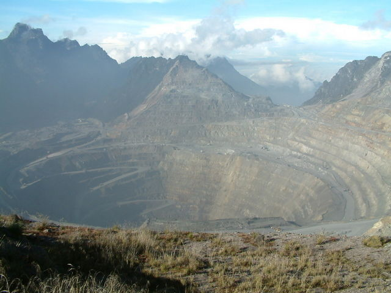
図 4 クレーター状に掘り進められたインドネシアグラスベルグ鉱山、Wikipedia
Googleで鉱山採掘と検索してみよう。世界中の露店堀りで巨大な穴をあけられた大地の写真が大量に出てくる [23]。
パソコンやスマホはスティーブ・ジョブス氏が普及に大きな役割を果たした。彼は今の状況を予想していたのだろうか。
〇 風車は回らない
未来予想図の一つに、平原や海洋上にたくさんの風車が回るイメージがある。この発電風車による自然破壊は知られていない。少し細かい試算になるが、自然エネルギーの雄が引き起こす自然破壊のすさまじさを見てみよう。
２０１６年の風力発電量は４８８ギガワット（ＧＷ）あり、太陽光発電の３０３ＧＷを上回っている [24]。１発電機あたりの発電量は大きく異なるが、３メガワット／年と考えると、世界の発電機数は１６万２千機となる。
陸上の風力発電には１ＧＷのために５０００トンの銅を必要とし、海上の場合９５００トンが必要となる [25]。３メガワット／年の出力を持つ１基の風力発電機に換算すると、陸上風力発電で約１５トンの銅が必要ということになる。銅は地核内に５５ppmしか内包されていない。５５ppmとは１００万分の５５という比率だ。さらに、原石である硫化鉱には１％程度しか銅が含まれない [26]。そのため１００倍の硫化鉱が採掘される。１５トンの銅を得るためには、１５トン÷５５ｘ１００万ｘ１００≒２８００万トンの地表を削り取り、ほぼ同量の選鉱屑を処分しなくてはならない。海上の場合なら５２００万トンだ。
１トンの土壌は０．５㎥とされるので、２８００万トンは１４００万㎥の土壌、５２００万トンは２６００万㎥の土壌となる。富士山の体積が４００兆㎥と推定されているので、陸上風力発電なら３万基、海上なら１万５千基の風力発電機に必要な銅の採掘体積に相当する。現状の１６万２千機基の風力発電機はすでに富士山を陸上状風力発電６個、海上風力発電なら１１個分堀りつくしたことになる。風車を倍にすればさらに同量の採掘を行うことになる。これは銅に限っての試算だ。風車を製造するには他の金属も採掘しなくてはならない。いったいどれだけの採掘をするのだろう。
銅は主要金属の中で、白金、金、銀、コバルトなどに次いで地核含有比率が小さく、かつエネルギー伝送のために大量に使われるので推計を行ってみた。風車の羽や筐体には鉄が使われるが、鉄は銅の１００倍近く地核含有量が多い。鉄の場合、生成の際にコークスを使用することでＣＯ２を排出する点の方が環境負荷が高い。
太陽光発電についても陸上風力発電と同程度の土壌採掘が必要になる。ＣＯ２の観点では自然エネルギーといわれる風力や太陽光も、土壌採掘を勘案すると必ずしも自然エネルギーとは言えない。
この問題は電気自動車にも当てはまる。電気自動車はエンジン自動車の倍の銅材を使用する。一般自動車１台に１０ｋｇ [27]、ハイブリッド車プリウスには３５kgの銅が使用される。電気自動車になると１台５０ｋｇという推定もある [28]。１０kgで試算しても年間１憶台の新生産車両には、１００万トンの銅が使用されていることになる。洋上風力発電機３万５千台に相当する。これは毎年富士山２個分の土壌を採掘していることになる。電気自動車が普及することで、さらなる鉱山開発が必要になり、今以上に土壌が採掘されていくことになる。
原子力を含め現有発電設備の継続利用と廃棄発電設備からの有用金属類の取り出しを真剣に考える必要がある。
エネルギー問題をＣＯ２の削減だけで考えることは正しくない。使用される金属の採掘の環境負荷も考えなくてはならない。むしろ、採掘による環境負荷の方が大きい。
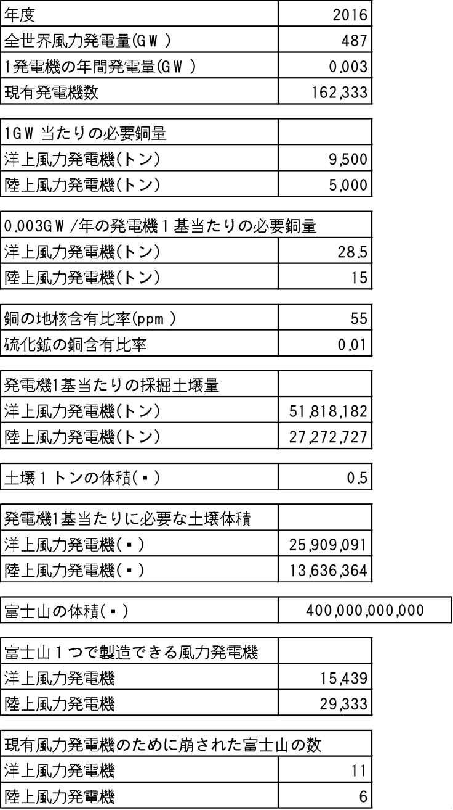
表 1 風力発電に伴う銅採掘の試算
第二部 懐かしい未来
０に戻って、もう一度、歩を進めるとき、我々はどこに向かっていくのだろう。みちしるべは過去にある。過去をよく見て、進む方向を選ぶのだ。我々の体が求めるもの、心が求めることに耳を澄まし、手を当てて進む方向を決めよう。我々は未来を知っている。未来は懐かしいものだから。
第五章 着想の原点
人間だって、もとは魚類、両生類。哺乳類になってからも湿った枯れ葉の下で恐竜に隠れて生きていた。猿人、原人になってもほとんどの時間を森で過ごしてきた。それが、コンクリートと新建材で囲まれた都会に住んで体調が悪くならないわけがない。何百万年という時間を森で過ごしてきたのだから。
森はしんとしていると思われがちだが、鳥や獣の、木々の羽音など実は自然騒音にあふれている。森にレコーダーを仕掛けるとやかましいことがわかる。風の音、動物の音、鳥の音、森はやかましい。その騒音の中で生きてきたのだ。静かなオフィスで不安に襲われないわけがない。
また、森の空気に木々が発する成分や細菌、マイナスイオンなどに満ちている。密閉され、衛生環境を整えられた住居にはない自然環境だ。整然としない不純物だらけの環境だ。
木や草・野菜などから放出される『テルペン』という植物成分がある。『テルペン』は木の香りのもと。人体には薬として作用することもある。交感神経系の興奮を抑えて副交感神経系を活性化させ、気分を安らいだ状態にする働きがある。都市部と森では空気中の微生物や浮遊物の分布も異なる。都市部では化学物質が多く、森では胞子や菌糸が多い。体によい微生物も悪い微生物もいるが、生物はそれらと一体となって生きてきた。それを失って体の機能はずいぶん弱っていることだろう。
日の出とともに１日が始まり、日の入りとともに終わる。太古の時代から西洋では二千年前（ユリウス・シーザーのユリウス暦）、日本では百五十年前までそうした暮らし方をしていた。江戸時代、一日の長さ、一時（いっとき）の長さは、１年を通して一定ではなかった。夏は昼が長く、冬は夜が長い。夏は昼の一時が冬より長い。それをある時、一定にしてしまった。定時法は戦争と工場で同時行動が必要になったことで取り入れられたとされる。
日本においては明治５年大みそかまでは日の出から日の入りを１２等分する不定時法が使われていた（夏の方が冬より一刻が長い）。西洋においても、古代からギリシャ、ローマ初期までは不定時法であったという。我々は定時法にすっかり慣れ切っているように思いこんでいるが体は太古からの不定時法の感覚を残しているのかもしれない。
一日が短い冬は生産量が少なくなる。当然夏の間に蓄えを作っておく。それが近代以降、冬でも夏と同じだけ生産活動をするようになった。一見合理的だ。しかし、何百万年もの間、体に染みついた、冬は休む習慣を失ってしまった。
人類は森では１日中動き回っていたはず。長時間椅子に座る生活は体に合わなくて当然。３０分程度椅子に座っていると、耳石（じせき）という体のバランスをとる機関が機能を失ってしまい体調全体に影響を及ぼしてしまうということだ。
人類が安易に生み出してきた道具は必ずしも人類のためになっていないものも多い。風雨や気温の変化を遮る家は自然と一体となった音や空気をも遮ってしまう。起立姿勢の筋肉の負担を和らげる椅子は、神経系統の統合性を狂わせる。定時法は人類を時間の奴隷にしてしまったのかもしれない。
我々はもともと森の中で暮らしていた。人類の祖先が地上での生活を始めたのはアフリカが乾燥気候に向かい出したおよそ９００万年から８００万年前とされる [3]。このころから雨季には樹上で生活し、乾季には地上で生活する二重の生活が始まったとされる。乾季が年間の４、５カ月程度になると熱帯雨林の減少が始まり、地上での生活を余儀なくされたと考えられている。地上の乾燥は我々の苦難の道の始まりだったのかもしれない。
平野部に出てきた我々の祖先も洞穴などに住処を求めた。虫もいれば、菌もいる環境だ。我々が住居を持つようになったのは２万５千年ほど前。当時はマンモスの骨や木を重ねた上にわらなどをかぶせた小屋を作っていたとされる（人類の住居の歴史を２分で見ることができるビデオ [4]がYouTubeにアップロードされている）。
その後、人類は平野部を中心に拡散し、狩猟中心から農耕中心に集団性の高い生活に移っていった（集団化については、胎児の脳の拡大に伴い自然分娩が困難となり、助産婦が必要になったことに起因するという説も有力）。四大文明をはじめ、国家は都市の下水処理に尽力し、衛生環境は向上し続けた [5]。もっとも、十九世紀においてもパリの通りには家畜の糞が散乱し臭かったという説もある。人口の増加に加えて、農耕、工業に次いで商業、金融が発展し、都市に人が集中した。この過程で衛生環境は継続的に改善され、死亡率は低下していく。二十世紀になり、我々の都市での生活は豊かさを極め、都市人口の増加が続いた。
参考まで国連が発表している都市人口の推移を紹介すると、
United Nation World Urbanization Prospects
https://esa．un．org/unpd/wup/Country-Profiles/
日本は、日本は、１９５０年には５０％だった都市人口が２０００年代に80％達した。以降、地方の崩壊などが進み、都市部への政策的な人口移動が目指され１００％に近づくと予想されている。
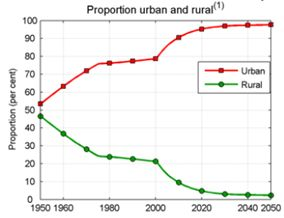
中国は２０１０年頃都市部と地方の人口の逆転が起こっている。予想では、都市への人口集中は70％にとどまり、全体としてアジア地域の標準的な割合に落ち着く。
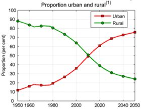
ドイツは第二次大戦後、都市部、地方の人口割合はあまり変動していない。７０％から緩やかに８０％に向かうと予想されている。この傾向は西欧の平均的な状況である。
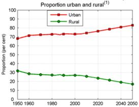
つい数万年前まで森や洞穴に住んでいた我々にとって、近代的な住居や都市は生きやすい場所なのだろうか。
厚生労働省のホームページによれば、欧米のうつ病の１２カ月有病率（過去１２カ月に経験した者の割合）は１～８％、生涯有病率（これまでにうつ病を経験した者の割合）は３～１６％である。日本では１２カ月有病率が１～２％、生涯有病率が３～８％であり、欧米に比べると低いとなっている。
同ホームページでは日本の気分障害患者数（うつ病等を含む）は１９９６年には４３．３万人、１９９９年には４４．１万人とほぼ横ばい、２００２年には８１．１万人、２００５年には９２．４万人、２０１１年には１１１万人と、著しく増加している。以前は気分障害であっても顕在化していなかった人数もありそうなので、実態として大幅な増加かどうかはわからない。
しかし、都市部、オフィスでの職場でのうつ病による不調者の数は、１割に近いのではないかという体感がある。
うつ病等の増加や深刻化の本当の原因はわからないが、情報の氾濫や、それに伴う時代の変化のスピードの上昇が我々の生活に大きなストレスになっているのではないかという感覚はある。
日々飛び交うニュースにも虐待やいじめなど悲惨なものが多く、国際情勢もテロが蔓延し心休まることがない。政治的な混乱も従来とは比較にならないほどに詳細に報道され、社会の前途に希望を持ちにくくなっている（報道しない方がいいということではない）。こうした環境は、子供はもちろん、大人にとっても心の負担となっている。
日本の場合、少子高齢化に関する情報が多く流布し、これも負担となる。少子高齢化は日本だけの問題ではない。日本は２０５０年までに１５％人口が減少すると国連が予測している。実はドイツも２０５０年までに１３％人口が減少する予想になっている。中国も２０３０年まで緩やかに人口が増加するがその後減少に転じる。地球全体では、アフリカの人口増加が大きく、２１００年の１０９億人まで人口が増加する。一方、アジア、ヨーロッパ、ラテンアメリカの多くの地域で人口は減少する。人口減少地域はどこも出生率が低下し少子高齢化となる [6]。子供が減り、老人が増える社会は元気が出る状況にはなりにくい。
キレる子供、キレる老人。キレるサラリーマン。いじめ、虐待。ロシアではアルコール中毒がものすごく多いそうだ。米国は薬物依存が多い。さまざまな大きなストレスの中、メンタルヘルスに問題を抱えて、社会に広まるこころのすさみを感じながら我々はなお生き続けなくてはならないのだろうか。
このまま都市集中が進み、情報が氾濫するなかこのまま生き続けることはむずかしいのではないか。大雑把な仮説ではあるが、もっと自然と距離を縮め、ひいては、都市から距離を置いて生きていくことが必要になると考える。それを今以上の快適さで実現する世界を我々の未来の姿として考えたい。
臓器が人工的に作られ、老化を逆行させる新薬も開発されるかもしれない（そうなると人口減少の予測は大幅に変わる）。体内に埋め込まれたセンサーによって体の変調は、機械の故障予兆検知のように行われて、メンタル面の不調さえも緩和できるようになるかもしれない。しかし、この方向性はこれまで我々の生活と人生を圧迫してきた技術に偏重した未来図のように思える。
これは、ハリウッドがしばしば描いてきた未来図だ。四肢に大やけどを負い、呼吸もままならない状態になって、なお生命維持装置をまとい悪の化身となったダース・ベイダー（『スター・ウォーズ・シリーズ』）。ブリキのロボットのような状態から技術の進歩とともに何百年にもわたって人工臓器を移植し続け、死なないことと生殖できないこと以外人間になってしまったアンドリュー（『アンドリューNDR１１４』）。ロボットの量産のために生殖機能の実装が試みられる中、設計者の意図をも超えて子孫を誕生させたレイチェル（『ブレード・ランナー・シリーズ』）。映画自体が人類の創造力の集大成である。消費と退廃に埋もれたハリウッドの世界観の中で織りなされた思索と検証が繰り返えし描いた人類の未来像の一流派だ。
一方、日本には宮崎駿の自然世界がある。ウォームの抜け殻の非常に硬質な有機系物質は、今後想定されるバイオ技術による資材生産を想起させる。すでに絹の抗菌性やクモの糸の高強度は産業材として注目を集めている。水車と風車を動力源とする風の谷はエコタウン、バイオタウンにつながる。
自然エネルギーの比率を高めるドイツの電気料金が高まっていることが注目され、日本でも全エネルギー消費に占める自然エネルギー率が２５％になるという基本エネルギー政策がある。一方自然エネルギーのための大規模な自然破壊も起こっている。これこそ、技術で乗り越えるべき課題なのではと思う。
ハリウッドが描くディストピアと宮崎駿が描く自然世界の融合はないのだろうか。東京大学池上高志教授をはじめとする人工生命の研究者は、アンドロイドのような人口物が、生態系の中で一定の役割を持つと論じている。人工物と生身の人間、あるいは動植物が関係を持つことで、設計されていた以上の人工物の機能が発揮されることがあるとしている。
池上教授らによるオペラをアンドロイドに指揮させる実験では、しだいに楽団員がアンドロイドと関係を築きアンドロイドを生かす演奏を始めるようになったとされる。
実は、ディストピアの中にも融合は描かれている。人とレプリカントの恋だ。自然世界の中にもある。『天空の城ラピュタ』に描かれるロボットは、鳥の巣を守り、少女に花を贈った。
〇 地産地消
何万人もの人が集まる音楽フェスが人気だ。わざわざ海外まで参加しに行く人も多い。オリンピックは参加者だけでも何万人になり、見に来る人を含めると１００万人単位の大規模のイベントになっている。
２０２０年の東京オリンピック・パラリンピックでは、１日当たり１００万人の移動人口が見込まれ、総入場者数は、１０００万人をこえると予想されている。
経済効果はとても大きい。しかし経済効果は大きければいいのだろうか。地球の裏側の米国や南米から東京まで五輪を見に来てくれることは日本人としてはとてもありがたいことだ。現地に足を運ぶことで街の隅々にある文化や風習、人々の暮らしぶりを実際に体感することができる。その価値が極めて大きなものであることは間違いない。
しかし、数百万人がジェット燃料を燃やして、ＣＯ２を大量に排出して移動することの意味はどう評価したらよいのだろうか。
沢山の人が集まることを良しとする価値はマーケティングとして体系化されている。人が集まることでお金が動き、波及効果も大きい。しかし、大きな経済効果を目指すこと自体が前世紀の価値観の体現だ。
モノを動かさないことで一番エネルギー効率が高くなる。人も移動しない方がいい。世界を旅することはいいことだ。世界を旅することが大変だった時代には本当に価値あることだった。今、世界を移動することは飛行機に乗れば簡単にできる。何億人もの人が世界を股にかけて移動している。世界中のさまざまな情報をネットで検索できる。現地にいても知ることができない情報がネット上にあふれている。もちろんネットで検索できることと実際に体感することは大きく違う。しかし、世界を旅することの価値は以前ほどに礼賛されない時代に入ってはいないだろうか。
外国を回るにしても地球の裏側までいかなくても隣の国でよいのではないか。隣の国であっての人も文化も、制度も違っている。そこをじっくり体験することに意味はないだろうか。
外国までいかなくても、自分の国、自分の故郷を深く知ることにより大きな意味はないだろうか。
以前は、テレビ電話を使って出張費用を削減することが議論された。今は、テレビ電話を使ってＣＯ２排出を削減することを考えるべき時代になった。技術は離れていてもよりリアルな体感に近いコミュニケーションを可能にしている。
食べ物も着るものも、エネルギーも、遠くからわざわざ運んでくることは効率の良いことではない。近所で作ったものを近所で消費するのが基本であるべきだ。自動車は遠出用の特別のものであっていいのではないか。飛行機は生涯にほんの数回乗るものでよいのではないか。徒歩や、自転車の使い勝手をもっと良くして身近なところを深堀する日常を生み出すべきではないか
我々が使っているものの多くは直して長く使える。服、靴、鞄、机、食卓、箪笥、食器。プラスチックや金属や半導体でできたものは直しにくい。木や革、土でできたものはどこまでも直せる。なぜ、我々は直すことを放棄してまったのだろうか。
新品の湯飲みは、底面が平でぐらぐらしない。千年前の湯飲みは、木製であっても陶製であっても、でこぼこができてぐらつく。防水性が落ちていて中身が染み出すかもしれない。機能性では新しいものに軍配が上がることが多いだろう。しかし、千年間人々に受け継がれさまざまな歴史を潜り抜けてきた湯飲みがもつ価値は計り知れない。二十世紀は先進国であっても多くの人々は貧しく、新しいものの機能性に惹かれた。新しいものに魅了され、次から次へと消費した。二十位置世紀は消費に疲れた人々が過去の生き方に戻るのではないか。使いつがれるものの価値、温かみやまろやかさが大きな価値を持つことを見直すのではないか。
社会の歴史は税金の歴史といってもいい。なにかを買うと付加価値税を取られる。しかし、捨てる際に税金を取られることはまれだ。大型家電品や自動車などは廃棄に際して少額の負担が必要となる程度だ。
しかし、廃棄による地球全体への負担を考えるならば、捨てる際には買う時を上回る税金が課されてもおかしくない。捨てることに高額な税金を掛けたら販売をする人達、つまりほとんどの人たちから一斉に反発を受けるだろう。新しいものが売れなくなってしまうからだ。
我々の社会は、特に二十世紀の大量生産、大量販売の時代には買ったものをどんどん捨てることを基本原理としてきた。捨てて新しいものを買うことで社会が回る仕組みだったのだ。これは拡大を前提とした論理構成だ。拡大の前提を外せば、とても愚かな原理を採用していたことに気づく。
木製であれば数十年、陶製であれば数百年の使用に耐える。綿や絹も数年以上は使える。数年、数十年、数百年使った後、粉々にして、土に埋めるか、川に流せば自然に還る素材を追求するべきだ。プラスチックや金属では丈夫すぎる。何千年も持ちこたえてしまう。持ちすぎるのも困りものだ。十分に長い期間使用した後自然に還るもので社会を構成しなくてはならない。寿命はある方がいいのだ。
アウトドアの道具や衣料を提供するパタゴニアの創業者はこう述べている。「身に着けるのに最もよくない製品例としては、一つの部品が故障するとほぼ捨てるしかない電子機器、ほかの部分はまだ新品同様なのにウエストのゴムがプールの塩素で伸縮性を失ってしまう高価な水着 [7]」。
靴はほとんどの場合、かかとの外側とつま先しか減らない。この２つの部分を交換できれば１０年履ける。そうなっている靴は極めて少ない。財布や手帳は折り曲がる部分と四隅が早く痛む。この部分を交換できるものは皆無だ。もっとも財布や手帳自体がスマホに置き換わろうとしているが。
スマホから金属を取り出すために回収が進められている。グーグルが一時期モジュール組み合わせ型のスマホを開発していたが断念した。まだまだやるべきことは多い。
第六章 安心、安全、高効率な仕組みがゆっくりとした日常を生み出す
この世界は、三つのものでつくられている。自然と偶然と人工。最も美しく完全なものが前の二つでできており、最も醜くて不完全なものが最後のもので出来ている
プラトン
〇 生物の力
我々の周りには人知を超える生物の力にあふれている。人以外の生物は地球と調和を保ちながら生きてきた。もちろん人も長く地球と調和を保ちながら生きてきた。ここ数千年だけ狂ってしまっただけだ。地球と調和する生き方、あり方に我々の未来がある。
ウォームの甲羅や蚕の吐き出す絹、クモの糸などの例を挙げた。固いものを利用する際に、鉄などの金属にいつまでも頼っていていいのだろうか。酸素を燃やして精錬するという、いってみれば悪魔の製法は、過渡的には必要だったかもしれない。それを長く使い続けたのは人類に気のゆるみがあったからではないか。
地中から無慈悲に鉱石を掘り起こして、生命の根源である酸素を燃やして鉄をとりだす方法は地球に負荷をかけすぎる。必要な高度を持ち、任務を終えたら、自然に帰る硬質資材を早く編み出さなくてはならない。
いわゆるアメーバと言われる菌類には、興味深い行動をするものがある。粘菌（ねんきん）は脳に相当する機関を持たないが問題を解くことができる。粘菌類は多数の個体が結合して生活している。この多数体はエサを求めて、細長く伸びていく性質を持つ。この性質を迷路の脱出に応用すると最適ルートの発見を効率よく行うことができる。実際北海道大学の中垣俊之教授は粘菌コンピューターの研究でイグノーベル賞を受賞している。
昆虫類には人知を超えた特異な技術を持っているものが多い。我々の血を吸う蚊は金属を使わずに針状のストローを作っている。これは医療用注射針に応用できるはずだ。トンボの羽には微細な凹凸があって、大きな揚力を生み出している。これは風車の羽などに応用されている。タマムシは塗料を使わずに発色している。多層に重なる膜によって光の反射を制御して発色しているのだ。石油由来の塗料の利用削減に応用できる技術だ。トビケラは水中でも粘度を落とさない糸を出して捕食をしている。水中接着剤にできれば手術などに応用できる可能性がある [8]。
伝統的林業には、新月伐採という手法がある。満月のあと下弦の月をすぎてから新月までの間に伐採した木はカビや虫に強い材木になるという。また、伐採時に葉を残し、葉が自然に枯れるように時間をかけて乾燥させると効果が増すそうだ。効果の源泉は木の中にあるフェノール成分が表面部分に集積してくるからだとされている。伐採は人工的な手法だが、それにさえ自然は力を貸してくれる。
木の成分であるセルロースを活用するセルロースナノファイバーという素材が注目されている。主成分は木由来であっても、石化製品である、樹脂やゴムを混ぜて使うので、生物由来でないものが混ざり、簡単には分解できない限界も抱えている。セルロールナノファイバーの実用化は近いとされるが、本来の生物由来素材の方向に進んでほしい。
大阪府泉佐野にスマイリーアースという会社がある。環境に負荷をかけずに綿製品を作っている。綿花は綿花を紡いで、洗って、乾かして、タオルやＴシャツなどの製品にする。この過程で染色をすると、すすぐ際の水が化学溶剤で汚れてしまう。それをなくすために、スマイリーアース社では、染色をしない。無色の綿花のままの色で製品を作っているのだ。これでいいのではないだろうか。
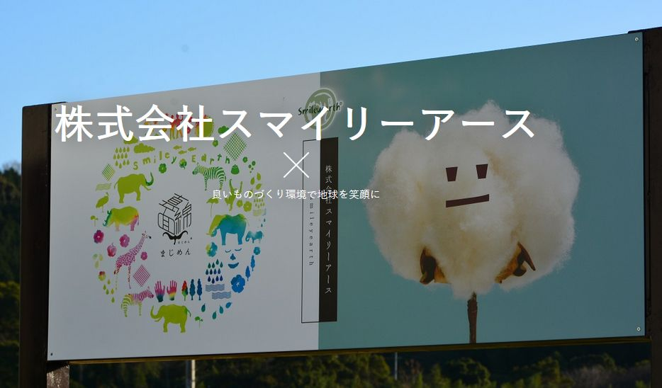
色とりどりの製品の方が売れるのかもしれない。しかし、綿花のもともとの色でもよい風合いを出している。むやみに自然に手を掛けないのが０次の発想と重なる。
スマイリーアース社では、紡ぐ際の機械の電力にも太陽光発電を使っている。ＣＯ２の排出を抑えているのだ。乾燥工程も、製造工程で出た綿花の廃材や雑木林でとった間伐材をバイオ燃料として使っている。
洗いに化学溶剤を使わず、電力は太陽光、乾燥にはバイオ燃料という構成は０次のお手本となりそうな製造プロセスだ。
こういう議論をすると、染料メーカーはどうするんですか、ということになる。染料も昔からあるもので、社会には必要なものだ。できるならば、石油を不可逆な化学処理をして作るものではなく、自然に戻る染料の普及を望みたい。
〇 脱教育
世界の多くの地域で教育は、長く、富裕層が独占してきた。多くの国で国民の力を引き出すため、学力が高い学生に機会を与える仕組みを整備した。学力を相対的に指標化したものが偏差値だ。絶対的な学力ではなく、自分が全体の何番目にいるかを分布で計ったものだ。
偏差値教育をさらに悲惨なものにしている手法が平均点、合計点での順位付けだ。何かがとてもよくできて他のものができない子供は低い評価になる仕組みだ。平均点、合計点を指標にしていては、社会は均質化し、無味乾燥になる。最悪の仕組みだ。
偏差値と偏差値を計算しやすくする平均点と合計点の仕組みは試験の成績を算術で指標化するのには向いている。ただそれだけのことだ。教育や人格形成はもともと試験では測れない要素を多く含んでいる。指標では判断が難しい領域だ。現実は、試験の点数をもとに偏差値によって学生を振り分ける方法に代わる方法がなく教育制度全体が大きく依拠している。
学校の科目にないことが得意な子供にとって学校は苦痛ではないか。音楽や運動ならまだよいが、たとえば、料理が得意な子、片付けが得意な子は偏差値教育のなかでは、良い評価を得にくい。数学や物理が得意な子と料理や片付けが得意な子はともに評価されるべきだろう。
１つの救いは、世界の富豪の多くは、偏差値教育から飛び出した人たちだったことだ。「ハーバード大学では卒業生に成功者はいない（２０１６年ラシダ・ジョーンズ他）」という揶揄（やゆ）がまかり通っている。世界の成功者の代表格、スティーブ・ジョブスとビル・ゲイツはともに大学を中退している。彼らの生き方が多くの人にとって目標になるとはいえないだろう。しかし、学歴にあまりにもこだわる必要がないことの例証ではないだろうか。
長く世襲が社会の基本構造だった。そこでは権力や富は家柄によってほぼ決まっていた。生まれた瞬間に将来を決められてはたまらない。それに代わって登場したのが学歴。学歴は努力によって獲得できるものという仮説があった。しかし、現実には、権力や富を持っている家庭から高学歴な子弟が生成する確率が高く学歴は家柄とあまり変わらない結末に行きついた。もちろん、学ぶことで機会を得られる仕組みは社会の進歩に大きく貢献した。
学歴が生み出した本質的な問題は、試験の成績で人を判断してしまうことにある。米国の社会学者ジョン・ガードナーは「現代の教育は、先生や親に褒められることに狂喜する子供を生みだしただけだ。そこからリーダーは生まれない」としている。
学歴よりもむしろ家柄の方が、社会にリーダーシップを増やす点では、判断基準として良かったのかもしれない。貴族にとって誇り高くあることは最上位の価値観だったからだ。
学歴教育には様々な問題がある。１つは、学歴別に学生を分けてしまう点がある。試験の点数が良くて自分が優秀だという自負がある学生からすれば、優秀な者たちで集まって切磋琢磨したいと思うだろう。しかし、世の中の現実は、少数の優秀な者たちが多数の優秀でない者たちを率いていく構造になっている。リーダーシップという点では、優秀な学生だけで集まることにはほとんど意味がない。
優秀な者たち、優秀でない者たちといういい方は全く正しくない。百歩譲っても一見優秀そうな者たち、一見優秀でなさそうな者たち程度にしか言えない。試験という視点で優秀とされた者たちが、政治、経済、ビジネスで必ずしも大きな成果を上げられないことも多い。同じく、試験という視点では優秀でないとされる者たちが大きな成果を上げることも多い。
特に、一見優秀でないとされる者たちの心の中に強いエナジーがあって、引き出されることを待っていることが多い。この引き出す力こそが、社会を良くしていく大きな要因と考えられる。引き出す力は学歴とは関係ない。学歴で学生を階層分けしてしまう学校制度はこの力の鍛錬にはとても非効率的である。
学歴にはほかにも多種の問題がある。
２０１８年、日本では『かがみの孤城』（辻村深月）が話題になった。中学校で同級生からの言葉に傷つき不登校になった主人公が、鏡の中で同じく不登校の子供たちが集まる城で新たな暮らしを始める話だ。いじめやカースト、虐待の増加はなぜ起こっているのか。
テレビの普及とともに言葉は乱暴になり相手への配慮が希薄になった。ラジオの時代よりも大幅に優しさは失われた。視聴率を取るために、エロ、グロ、ナンセンス、ショッキングであることがエスカレートしていったからだ。映像は多くのものを生み出す一方で多くのものを破壊した。
日本では、江戸時代に春画が広まり、妖怪の絵も人気を博した。川柳や滑稽本も広まった。人の心の一定割合にそうしたものを求める衝動があるのだろう。しかし、それは、秘められたものであり、大っぴらに表に出てくるものではなかった。今、ネット上には自殺の仕方も麻薬の作り方も、爆弾の作り方も何でもある。二十世紀は戦争の世紀と言われ、残虐な虐殺が続いた。二十一世紀初頭はテロが蔓延している。目を閉じ、耳を覆いたくなる情報が氾濫している。情報を遮断しない限り、心の平静を失う情報に押し流される。
ＳＮＳの普及とともに人間関係はますます希薄になった。勝手に知り合うのはよいとして、相手のことなどあまり考えずに付き合い、嫌になれば、関係を切ってしまう。配慮も責任もない人間関係が生まれてしまった。人の私生活の情報を守ることはますます難しくなり、心ない中傷や詮索が日常にあふれている。
人への愛情、配慮、思いやりがうすらいでいないだろうか。技術的には遠隔教育が可能になった今、子供たちが集まったときに、教育の対象とされるべきことは人との関係の作り方、配慮、思いやり、共感などではないだろうか。知識を簡便に手に入れられる時代は、同時に知識以外を学ぶことが難しくなった時代でもある。従来と同じ教育ではいけないのではないだろうか。
国際社会で活躍するためには英語が必要。小学校から英語を教えよう。世界ではＩＴ教育が進んでいる。小学校からプログラミング教育を始めよう。日本人は自分を主張する力が弱い。だからプレゼンテーションの機会を増やそう。こういう主張が多い。間違ってはいない。
しかし、ネットの時代、ＳＮＳの時代、核家族時代、少子高齢化の時代、テロの時代に本当に必要なことは知識ではなくなってきている。
フィンランドが教育改革を行って子供たちの学力を向上させたという話がある。教育時間を増やしたわけではない。むしろ減らしている。宿題もなくした。子供たちの学びたい気持ちを重視した教育に変えることで学力を向上させたとされる。知識の学習においてさえ自主性は重要な視点であるようだ。
一方、共感などの知識以外についてはどうだろうか。答えがないようで実はあるのではないだろうか。挨拶などの礼儀が典型だ。共感は形のないものだからこそ、型にはめて身に着けるものだと考えられる。形がない共感を学ぼうとしても無理があるからだ。挨拶をするという行為で相手との関係を作るのだ。自主性よりむしろ強制が必要なのではないだろうか。
核家族になり、祖父、祖母から学べない。兄弟が少なく、家族の中でも学べない時代になって久しい。地域のコミュニティーで老人と子供を一緒に集めて、何かを学べるだろうか。学べなくはないが、それだけでは事足りない。自分は子供たちが自分から学ぶために集まってくれるシニアになれるだろうか。この問いに答えを見つけることが老いなのではないか。
より難しいのは、学校を終えた世代、さらに、シニアになってからの教育だ。自分の好奇心も高まらず、周りからも期待されない中で、学びを継続することは簡単なことではない。これから、日本の場合で、独居率が４０％になるといわれている。少子高齢化が進む各国でも似た状況が想定される。独居では同居者から怠惰を批判されることはない。定常的に無関心と折り合っていかなくてはならない。批判のない中、孤高の状態で学びを継続していくにはどうしたらよいのだろうか。生涯学習と急に言われても、今まで学ぶ意識がなかった者が急に勤勉に学ぶことなどあり得ない。
人生が長くなり、独居の確率が高まる中、子供の頃から、学ぶことの意味を深く、広く突き詰めることが必要なのではないだろうか。学ぶとは何で、自分はなぜ学ぶのかに納得感がなくて、生涯にわたる学習など成立するはずがない。
より人間関係について向きあうことあ教育の目指す方向となるだろう。人間関係とは心とむきあうことではないだろうか。
〇 体中心
頭が大事ということは我々にすりこまれている。大きな衝撃音を聞くと自然と手で頭を覆う。戦闘術では、心臓を止めるか、頸動脈を切って脳への血流を断つ。手足を失っても生きていけるが頭を失っては生きていけない。誰にでもわかることだ。あたまが生命の維持の根幹であることは深く我々の感覚に染みついている。
頭のそばに目があり耳がある。鼻もあり口もある。頭部で多くの感覚の受容と情報処理を行っているように感じる。一方、体の全表面を使って我々は知覚を行っている。胴体の多くを占める内臓でも多くの知覚を行っている。
学校という仕組みが頭中心になりすぎていないか。体育や音楽はあるものの、机に座って、文字を通して学ぶことに大半の時間を使っている。塾という学校の補完機能を使って、さらに文字に固執した時間を使うことも多い。前提には知識が社会を前進させるという仮定がある。この仮定は検証されたのだろうか。
近年はパソコンを中心にしたオフィスワークが一般化している。一日中パソコンと向き合う状態が続く人が多くなっている。これは健全な生活様式なのだろうか。
身体感覚の重要性に提言を続けている榎田竜路氏はさまざまなアプローチで身体感覚の可能性を探っている。小学校での打楽器のワークショップでのこと。
打楽器は身体全体をバランス良く使わないと「いい音」が出ない。子供たちはいい音と良くない音の違いがすぐに分かる。いい音が良い姿勢からでないと出ないことをつかむ。いい音を出そうとして自然に姿勢も良くなっていく。
いい音が出るようになると、集中もどんどん高まって最後は全員での大アンサンブルとなる。普段使わない感覚を楽しく使うことで体全体が活性化する。
榎田氏はミス・インターナショナル日本代表の指導も行っている。日本人は、外国人、特に南米人に比べると、押し出す迫力が弱いという。榎田氏の指導で腰骨をそらして胸を張る指導を受けた日本代表は一回り大きく自信に満ちて見えた。
〇 家・近所中心
夕方、日暮れ前に帰宅する。家族とともに夕食の準備をする。夕食をたべる。そこに歌でも歌う家族がいたらいいのではないか。ギターやピアノで伴奏して。一通り歌って踊ったら、汗を流して床に就く。寝る前の発汗が皮膚への油分の供給になり肌に良いことも知られている。
日が暮れる前に、走ったり、球技をしたりする人もいるだろう。お茶、お花、剣道や合気道などの武芸を稽古する人もいる。
週末には、近所の人が集まって、舞台の稽古をする。お披露目の場は年に一度の祭りの日。家庭菜園をやる人もいるだろう。魚を釣ってくる人もいる。
１日の終わりに心と体をリフレッシュするのはとてもいいことだ。これを実現するには通勤、通学に１時間以上かけていては難しい。職住接近がよい。半径４００ｍくらいで大半の生活が完結する世界をイメージしてほしい。
今、日本の場合、地方都市はイオンモールが生活の核になっている。都市部と同じものが手に入る便利なモールがあることはいいことかもしれない。しかし、モールに人が集まると同時に古くからの商店街がシャッター通りになるのはいただけない。小さな商店、飲食店もあるべきだ。
できることなら、地域の電力を自家発電で賄いたい。
遠くで取れた野菜や肉ではなく、できるだけ近所でできたものを食べるようにしたい。
食もエネルギーも地産地消がいい。
あえて遠出することもあっていい。自動運転車が連れて行ってくれるとありがたい。仕事をしに行くということは、海や、山にいくことになるといい。普段は家で仕事をする。公民館でもいい。たまに仕事に出かけるときは自動運転車で眺めのいい海や山に行きたい。海や山を眺めながら仕事をする方がいい考えが浮かぶだろう。
第七章 人工世界への自然機能の融合
自然回帰でもなく技術信仰でもない第三の道が我々の未来ではないだろうか。
日常の広範な生活導線、活動導線に「ネイチャーファンクション」を復帰させることで人類の可能性は広がっていくのではないだろうか。テクノロジーはその方向に使われるべきだ。
農耕文明以前、人類を含めて地球環境は自然の機能に基づいて調和を保っていた。文明が起こり、近代に突入すると、大きく自然の摂理から逸脱し始めた。現代においては人工世界への人間の過剰適応が臨界点を迎え、世界的な気象異常に見られるように環境問題が顕在化している。これは、これまでの効率性、利便性の追求の過程で、外部不経済に非効率性、非生産性を押し付けてきたツケと考えられる。こうしたアプローチに自然・バイオ発想での修正を試みることはできないだろうか。
オムロン株式会社にあるヒューマンルネサンス研究所は、創業者の哲学を受けて、未来の社会の具体化を行っている。それは、「最適化社会」、「自律社会」の次に、「自然社会」という理想社会の実現としてまとめられている。
２０３３年をターゲットに、最終社会の「自然社会」が建設されるという行程を描いている。「自然社会」は、「自律社会」が常態化したうえで、自然の摂理やプロセスの一部として無理のない循環を持つ社会と定義づけられている。
ここでいう「自然社会」は自然だけの社会ではない。人工物に囲まれた現代社会への自然機能の再インストールである。ヒューマンルネサンス研究所の言を借りると、「木の上でごろ寝をして、木の実を食べる」生活に戻ることになる。補足すると、１００憶人を超える人類の人口を支える技術を伴う自然生活の実現と言える。本当の自然状態では、地球の自然資源が枯渇してしまう。技術によって、この限界を克服することが必要だ。
その技術がこれまでの人工物を量産するものではなく、むしろ、人工物を生産しない力学を生み出すために自然機能を活用する指向ですすめられないだろうか。品種改良して食物を増産するのではなく、自然環境を取り戻すことで収穫を増やすことを目指すということだ。
〇 バイオエネルギー
都市へのバイオの活用で従来から行われてきたのはバイオマスのエネルギー利用だった。バイオマスとは自然物と理解してもらうのがよい。木や草、残飯、し尿などは典型的なバイオマスだ。エネルギー利用に占めるバイオマスの割合はおよそ１０％と言われ [30]。風力、太陽光などの再生可能エネルギーや水力発電よりも多い。
バイオマスのエネルギー利用について技術革新は進んでいるが、かまどなどの効率が悪い伝統的利用が８割を占めているのが現状。また、バイオマスを発電に使う場合も、現状の発電方式に比べるとコストが高いという評価になっている。しかし、このコスト上の不利は、従来の発電が環境負荷などを外部不経済として切り離してコスト算出しているためである。ＣＯ２の排出などの環境負荷（への対応）をコストとして計上すれば、バイオ発電を短絡的に高コストとは言いきれない。
バイオマスのエネルギー利用の９割は木質系と言われる。木質系以外が実はバイオ系の本命だ。バイオ系の本命はサトウキビからの糖類生成残滓などからエタノールを取り出し、エネルギーとして利用する。残り物からエネルギーを作り出す点で無駄が少なく効率が良い。かつ、ＣＯ２を吸収して育った植物由来であるので、エネルギー生成に関してＣＯ２の排出率が低いとされる（エタノールの生成過程で機械を動かすエネルギーについて考慮が必要）。藻類や木質成分からのエネルギー抽出の研究が進められているが実用化は遠い。
そして、伝統的バイオマスのエネルギー利用はエネルギー効率が低く、かえって、森林破壊を助長しているともいわれている。
バイオマスのエネルギー利用の先進国はフィンランドでは、２０％以上のエネルギーにバイオマスが使われているとされる。バイオマスは欧州での利用が多く、米州、アジア圏では少ない。
〇 バイオスフィアー
都市に、人の聴覚では聞こえない音も包含した音響環境を整備する方法もある。森林騒音やバリ島のケチャ音楽のリラックス効果が知られている。都市の音響環境を変えることは生体環境の改善につながる可能性がある。
環境音楽という分野もあるが機械装置で森の音波を発するより、森に住むこと、都市を森に近づけることを検討する方がよいだろう。バイオ環境との共存は検討を加速するべきだ。
森林の微生物濃度に近い空気空間を作ることによる生活の快を増進することができる。オフィス、街中、田舎、森、空気の細菌層が違う。これまで空気の研究は、主に衛生面で行われてきた。一定体積中の有害物質の濃度が指標となってきた。最近の研究では、空気中の細菌層が人体に影響を与えることが知られている。
空気の状態を自然環境に近づけることで生命力を取り戻せなるのではないだろうか。マイナスイオンや森林の空気のミストを部屋やオフィスに噴霧する商品がある。しかし、まだ、森の力を取り込むところまでには至っていない。部屋やオフィスに噴霧することでも多少の効果はあるだろうが、家やオフィスを森と同化させる効果の方が大きそうだ。
窓を開けられないような高層ビルはなくしてしまってはどうだろうか。バベルの塔以来、人類は高層建築物を求めてきた。そこには何かの行動原理があるのかもしれない。それは否定しないが、集積した都市ではなく、郊外、山間など、いわゆる過疎の地への復帰も人類全体としての選択肢だろう。都市で働き、工業団地で生産する近代産業立地に代わる分散型の社会構造だ。
遺伝子組み換えの倫理規定は議論されているが、研究室では相当な実験が進んでいるだろう。強力な細菌によるパンデミックを描く映画は多い。あながち荒唐無稽ともいえない。
『ゴジラ』は核実験の放射能によって古代生物がよみがえったという設定になっていた。『ジュラシックパーク』では、琥珀の中に残っていた恐竜の遺伝子の復元という手法が提示された。『ゴジラ』の発想は、まさに懐かしさを覚える。『ジュラシックパーク』は技術の恐怖を看破した。倫理で技術を抑え込むことは現実的ではないだろう。
モンサントの非道な農薬ビジネスが批判されている。モンサントは自社製の強力な農薬とその農薬に耐える遺伝子組み換えを行った農産物の種の販売を行った。その農薬を散布された近隣の農家では栽培が行えない状況が起こった。モンサント製の農薬と耐性種が広がるとともに、農地は自然状態への再生が不能なほどに痛み、荒れた。映画で描かれるかのような、子供じみていて強欲で、実社会で起こるとは思えないほどの救いのない行いだ。
人工臓器もバイオテクノロジーの時代に入った。以前は工学的な部品の発想で臓器の機能を模し、モーターの動力で駆動をかけた。いま人工臓器は再生を目指している。網膜や心筋など一部では細胞の再生が実現している。
人工臓器にも倫理の視点はある。本来の自然寿命を超えて、臓器を再生し、生きながらえることは生命の在り方として正しいのだろうか。進歩、進化の概念を含めた新たな倫理観、哲学、宗教観が必要かもしれない。
〇 ジオサイエンス
地震は地球のヘルニアか。ハリケーンは地球の花粉症か。米国カリフォルニア州の広範囲な山火事は地球のアトピーか。温暖化と異常気象の関係はわかっていないが、感覚的に地球の健康状態は悪化しているように感じる。
１１世紀～１３世紀に欧州に温暖期があり、イギリスでワイン生産が隆盛し、ヴァイキングが陸路グリーンランドに攻め入ったとされる。またその後、小氷期があったことが知られている。これについて、地球規模でどのような変動であったかは証拠不足とされている [31]。これは気候変動に関する国際パネルの膨大な検証報告書の記載だ。一方で、前掲報告書は、二十一世紀に入っての北大西洋における低気圧の強大化は検証されたとしている。
日本では、明治期から地質調査、基礎工事の技術が高まり、河川の改修も進んだ。結果、従来なら居住しなかった地盤上に家を建てるようになった。安全を考えれば、多少不便でも硬い岩盤でできた丘の上に居住すべだった。しかし、便利で人が集まる低海抜地に密集した。結果、台風のたびに被害が出ることになった。
自然との共生を考える際、地震や台風の被害を受けないという視点も必要だ。地盤ネットホールディング社の調べでは、日本では７割の人口が３割の水害危険度の高い地域に居住している。水害危険度が高い地域は、地震による液状化や津波の被害も受けやすく、災害リスクが全体に高い。
建築基準法が改定され、建物の耐震設計基準は高められたが、水害に対する居住地域の基準は法制化されていない。０次産業革命として、我々の生活全体を見直すとき、居住地域についても考える必要がある。自然の機能との共存共栄を考えるうえでより安全な地域に居住することも忘れてはならない。
転居はなかなか進まないものだ。過渡的には、避難所や避難経路の見直しも必要になる。合津若松市では、東日本震災の際の避難所に旅館を利用した。一般の体育館、公民館より生活環境がよく、避難者の体調不良が少なかった。旅館の営業再開への制約も考慮が必要だが、避難に関しての注目される施策だ。
日本の場合、空き家が全戸数の３割に達するといわれる。避難や移住に際しての空き家の活用も考えたい。
旅館にしても空き家にしてもどこでも利用できるわけではない。地震、水害に対する耐性によって仕分けが必要だ。
テレワーク（遠隔勤務）は、通勤混雑の緩和だけでなく、少しでも災害のリスクがある場合は、指定の旅館や空き家に事前に移動してしまう際にも利用できる。リスクの高い低海抜地に通わずに日常を過ごすのだ。通勤や通学についての社会通念を見直す必要がある。
ジオサイエンスとは地球科学のことだ。地震学、気象学やそれを支える地質学、岩石学、古生物（化石）学、地球磁場学、惑星運動学、鉱物学、隕石学、火山学、地球環境学など広範な学問領域がある。０次の社会に欠かせない学問だ。地盤、地形、気候を考えて我々は生きていかなくてはならない。
第八章 ローカルの真実
ビジネススクールに行くと多国籍企業の戦略をいろいろと分析する。本国で売れたものをローカライズしないと売れない、ローカルの文化を尊重しないとうまく運営できない、ローカル人材の登用は必須などなど。さまざまな分析を重ねて、ローカルで利益を上げて、本国に資本移転する手法を考える。そうした企業の活動によってローカルの生活水準が上がるとはいうものの、本質的に考えたら、おおきなお世話でなないだろうか。
ローカルはローカルの自助努力で発展していくのがローカルのためになるのではないだろうか。
一つの例として日本の話をしてみたい。ありがたいことに日本は世界経済の中で大きなポジションをとっていて様々に分析されていている。それはある時期、経済的繁栄が称賛され、伝統的に西洋と違う価値観としてミステリアスな魅力をもって、世界に受け止められている面もある。日本ほどには恵まれていない国の方が多い。それについても考えなくてはならないが、まずは、日本を例にして考える。
西洋、東洋という分け方がある。とても大きな分け方だ。西洋にもイギリスがあり、フランスがあり、ドイツがあり、アメリカがある。東洋の方も、中国があり、インドがあり、日本があり、インドネシアがある。それぞれかなりの違いを持っている。文化も違うし、遺伝子も違う。文化や遺伝子は国の境でちょうど切り替わるわけでもない。東洋と西洋と、国ごとのラベルの付け方に正確性はない。
そんな中であえて日本を例として取り上げる。日本と同じことがそれぞれの国や地域、民族にあるだろうということが前提となる。
日本の大きな特徴は多神教であることではないだろうか。自然信仰が根付き、森や木や石にまでが信仰の対象になっている。世界的にみて、自然環境が豊かなところでは多神教が繁栄し、厳しいところでは一神教になるともいわれる。豊かな自然に感謝する信仰と、神にすがって生き延びたい信仰の違いということだ。
興味深いのは、外来の一神教であるキリスト教も一定の普及を見ていることだ。キリスト教が伝来した十六世紀には、当時の対立と殺戮の世相を反映してか、急速に影響力を増し、かえって禁教の憂き目に合っている。一神教も多神の一つなのだ。
冠婚葬祭を別別の宗教でおこなうというのも日本の特徴的な儀礼観ではないだろうか。百日参りは神社。結婚式はキリスト教。葬式は仏教というのが多いのではないだろうか。宗教にこだわりがない。
言語も異なる。西洋の言語とは大きく異なり、漢字を使うものの、中国語とも語順が大きく異なる。
遺伝子にも、特徴がある。ただし、日本列島在住の現代人にも４つ程度のグループがあるとされる。一つは日本の固有の特徴があるグループ。５％程度と少ない。５０％程度は中国、韓国と共通性が高いグループ（弥生グループ）。２５％程度がアイヌや沖縄人と共通性が高いグループ（縄文グループ）、その他、という４つだ
Ｙ染色体上のＹＡＰと呼ばれる遺伝子に日本の男性にのみ存在する変異がある。３万年ほど前に起こったとされ、Ｄ１ｂと呼ばれる。この変異は日本人のみ（主として縄文・沖縄やアイヌ系に多い）とされている。この変異は精子の精製が弱い特徴があり、中国、韓国では絶えてしまったのではないかとされる。繁殖には不利でも、ほかに優れた面もあるかもしれない。この変異は、縄文グループに多く見られ、今では、山間部や四国在住者に多く見られるということだ（徳島大学の中堀豊教授などの研究がある [2]）。
日本を例にローカルの意味を考えたい。
日本の場合、文化的にも遺伝的にも東洋の影響が色濃いことは間違いない。西洋とはずっと遠い。そして、大陸の端にあり、大陸から押し出されてきた、あるいは追いやられた一群の文化と遺伝子が肩寄せ合って生きている国ともいえる。
そこに、世界でも有数の豊かな自然があり、木々とともに主に農耕で生きてきたのが日本の特徴だ。その日本だからこそ実現できる機能がある。競争は好まないし、得意でもない。一方で繊細で、粘り強く、自然との距離が近い。伝統に固執することもなく、多様な文化を取り入れ、ごちゃまぜの文化が形成される風土がある。
レヴィー・ストロースは、日本人を「ある時には、外からの影響に開かれ、それをよりよく吸収しようとし、別の時には、身を丸め、まるで外国からもたらされるものを拒絶する、あるいは閉ざされた回路の中でそれをよりよく自分のものにしようとするかのようなのです。」と評した。
こうした風土のもと、日本らしさはいくつも世界に発信されている。自動車産業は日本社会に向いている。多数の部品を精巧に組み合わせる必要があるからだ。東京大学の藤本隆宏教授は「すり合わせ」が日本のものづくりの強みという仮説を提唱している。トヨタ生産方式に軸足を置いた仮説だ。それだけが日本の良さとは思いにくいが、示唆に富む仮説の１つだ。
電気自動車を推進するテスラ・モータースは自動化ラインで組み立て生産を行っているが、最終工程終了時の変形、突合不良が頻発し、人力で補正、再組み立てを行っている。金属や樹脂であっても曲がりやたわみがあり、図面通りに組み立てることは容易ではないのだ。
ロケット産業にも特徴がある。強力なエンジンをぶっ放して飛ぶ大型ロケットはあまり向いていない。ロケットの中でも、低推力で遠くまで長く飛ぶイトカワのような分野が強い。
電子部品業界も世界的に強みがある。セラミックなどの電子分品の製造には繊細な配合が必要となるからだ。
大量のデータを巨大なコンピューターで処理するプラットフォームビジネスには弱い。プラットフォームビジネスと相性がいい深層学習分野も旗色が悪い。共通基盤について、米国はデファクト型（規格はなく広まったものが勝ち残る）、欧州はデジュール型（初めに規格を作って統一させる）が得意とされる。日本はどちらも得意ではない。日本語という言語や日本人の人口という制約も大きい。日本語を話す日本人が世界に１０億人いたらデファクトを取って行く可能性は高かっただろう。多国間の離合集散が繰り返される欧州のような地勢学上の伝統があれば、デジュールにも長（た）けていただろう。
文化面では、禅という文化が今も残っている。禅文化は発祥の地である中国にはあまり残っていない。浮世絵の画法が欧州の画壇に多大な影響を与えた歴史もある。
日本人の西洋人に対するコンプレックスとあこがれは強く、世界から人材が集積するシリコンバレーを礼賛する傾向が続く。この特性は変わらないだろう。グーグルやフェイスブックがなぜ日本から出ないのかという議論が好きな日本人識者は多い。あまりに違う環境にあり、同じ結果がでることを求めることには無理があることはあきらかであるのにである。そういう飛躍がある発想も大事な面もある。発想の飛躍も東洋的な文化の一側面である。浮世絵の構図は写実的ではないが、写実を超える臨場感を出している。
もちろん、徒労も多い。徒労をいとわないことから生まれる価値も多いので徒労も一概には否定はできない。ＩＰＳ細胞の発見、発展に尽力する京都大学ＩＰＳ細胞研究所の山中伸弥所長は「自分の医学に基づいた（理学的）研究方法だけではＩＰＳは発見できなかっただろう。一緒に研究した工学的手法を使うメンバのおかげだ」という趣旨の発言を繰り返している。少し見方を変えると、山中所長自身の東洋的思考方法と部下の西洋的思考方法が両方あって大発見につながったと解釈できないだろうか。興味深い。
京都大学の今西錦司教授の進化論は、学会では主流にはならなかったがこちらも示唆に富む。生物の進化には環境との相互作用が影響するという説で、競争がなくなるようにすみわけを行うという説が説かれている。日本の風土で育った人から出てくる仮説らしさがある。日本人の多くは、遺伝的に縄文の遺伝子を残す一派での影響を受けているのかもしれない。争いを好まず、ひっそりとすみわけていたいのだ。
『日本で一番たいせつにしたい会社』を著した法政大学の坂本光司教授は、年功序列による給与、昇格を推奨している。成果主義は内なる競争を生み、不信が生まれる。不信から会社はダメになると述べている。坂本教授が調査した七千社のうち一割が『日本で一番たいせつにしたい会社』の基準を満たし、そのほとんどが、年功序列を採用しているという。坂本教授の論は、日本だけでなくアジア地域で強い支持を得ている。
最近は、電子政府はエストニアがいい、教育はノルウェーやスウェーデンがいいと言われる。数十年来、米国式の小さいころから発表と論戦をさせる教育がいいとも言われてきた。世界各地にいいものがあり、それを知ること、学ぶことはいいことだ。しかし、それをそのまま取り入れるということは正しくない。
一時期成果主義がもてはやされた。成果主義はいいことだ。しかし、日本には、成果主義を超えた、ある意味より進化した形態の家族主義や年功序列、終身雇用という仕組みが広まっていた。そこに拙速に成果主義を持ち込んだことで、多くの良いものを失ってしまった。家族主義や年功序列、終身効用が閉塞感を生み出しているなら是正もありだったろう。安心感と充実感を生み出していたなら、そのまま継続するべきだったのではないか。新しいもの、外から来たものに強い興味を示すのは、日本人の特性のひとつだ。うまく取り入れることもあるが、うまく取り入れられないこともある。漢字からカタカナ、ひらがなを生み出したのは成功した事例だろう。
仏教も日本に来て大きく日本仏教に変わっている。一つの例だが、「山川草木悉皆成仏（さんせんそうもくしっかいじょうぶつ）」という草木にも成仏があるという考え方は日本で始まったとされる（９世紀後半の安然（最澄に続く天台宗の僧侶）の言とされる）。浄土真宗開祖親鸞による悪人正機説も日本仏教の産物だ。
インターネットやオープンソース、クラウドやＡＩなど目新しいいツールはどんどん米国を中心に開発される。ツールは気軽に取り入れてもいいだろう。一方、思想は気を許してはいけない。ツールに思想を乗っ取られるようなことはあってはならない。
米国発のツールには思想が希薄なことが多い。思想が薄い気楽さが新たのものを生み出しやすい面もあるかもしれない。他面、伝統があり、気難しい日本の気質に気楽さは合わないことも多い。むしろ、気楽さから生まれたツールを思想面で昇華させるのが日本の風土の役割なのではないだろうか。
「山川草木悉皆成仏（さんせんそうもくしっかいじょうぶつ）」の考えは、インド、中国という仏教の系譜の中に、出てこない。仏教は、人間と動物を有情、植物と無生物を無情として線引きをして、一体として認める範囲は動物まで、としている。
ちなみに、ジャイナ教（インドの固有宗教）は植物と無生物にも霊性を認めている。一方、西欧哲学の基盤とされるアリストテレスは、生物を植物、動物、人間と３つに分け、植物は栄養と感覚、動物はこれに欲求が加わり、人間はさらに理性が加わると分類している。その後、西欧ではデカルトの動物機械論に行きつく。デカルトの後継者であるマルブランシェは、妊娠している雌犬を蹴って、悲しそうに逃げていく姿をみて、「あれは何も感じていないんですよ」と言い放ったというエピソードを残している。
「山川草木悉皆成仏（さんせんそうもくしっかいじょうぶつ）」は９世紀後半の安然の著作「斟定草木成仏私記」に起源があるという。
「問：こころのない草木は成仏するか。答：成仏する」
では、この思想が現代日本人の人口に膾炙したのはいつでしょうか。
それは、１９８６年１月２８日第１０４回国会の中曽根康弘首相（当時）による施政方針演説にある。この演説の草案は、国立民族学博物館名誉教授梅棹忠夫氏によるものとされる。
「この数世紀を間、科学技術の発展に支えられたヨーロッパ文明は、 極めて強い活力を保持して、世界のすべての地域に圧倒的にその影響を及ぼしてきました。
しかし、今世紀も深まるにつれて、世界の人々は、人類がその何千年の歴史において世界の各地域でつくりあげてきた施策と倫理と社会体制は、それぞれが人間の英知と尊厳性の刻まれたものであり、独自の価値を持つことを知るようになったのであります。
更に重要なことは、核戦争の脅威や、遺伝子操作が提起する人間の尊厳にもかかわる問題のように科学技術の発達のみでは、必ずしも人間の幸福を保障し得ないことがはっきりしてきたことであります。
こうしたことは、我々が今後考えるべき二つのことを暗示しています。第一は、科学技術が人類文化を覆いつくすのではなくて、科学技術を人類文化の一部分として適正に位置づける必要性であります。第二は、科学技術以外の人間の精神文明について、科学技術がその同価値性を認め合ったように相互間における理解を深め、共通の価値評価の基盤を拡げることであります。
釈迦は、すでに二五〇〇年ほど前「天上天下唯我独尊」と喝破し、また、仏教思想においては、「山川草木悉皆成仏」ということがいわれております。これが東洋哲学の神髄であります。
我々日本人は、大自然は人間のふるさとであり、人間はこれとの調和の中で、動物、 植物、生きとし生けるものすべてと共存しつつ生きていると考えてきました。調和と共棲、すなわち、 「共存の哲学」こそ、日本民族が長い歴史の中で育ててきた生き方の基本であると思います。」
特に西洋では言葉にすることに重きを置く。言葉にできないことを認めない風もある。日本人は、言葉にならないことがたくさんあることを体感的に信じている。もちろん、西洋人でも言葉以外にコミュニケーションを大事にする人もいる。逆に日本人でも言葉によるコミュニケーションに固執する人もいる。
１０００分の数ミリを対象とする研磨の職人は、違いを言葉では表現できない。指先の感覚で感じている。この感覚がなければ動かない機械はたくさんある。
感覚が繊細になればなるほど、言葉にすることは難しくなる。日本には、英語にない「雨」を表現するたくさんの言葉がある。北極圏近くに居住するイヌイットには「雪」を表現する言葉が多数あるそうだ。ブラジルのサッカー用語にはフェイントの掛け方について無数の表現があり、スペインにはパスの出し方や敵の挟み方に関してたくさんの言葉がある。言葉を増やせばかなり繊細なことも表現が可能になる。言葉の表現力を否定することはできない。
言葉の中でもより抽象度が高いものに数字がある。数字をもとにさまざまなものが比較されている。幸福度まで数字にしようとする努力が続けられている。
ブータン発の国民総幸福度（GNH：Gross National Happiness）が注目され、ノーベル経済学賞受賞者等を委員にして作成したより良い生活の指標（BLI：Bette Life Index）も毎年更新されている。数字にして測って比べればよくなるという西洋的思想と、幸福は所得では測れないという東洋的思想のハイブリッドとして面白い試みである。
そもそも国内総生産（ＧＤＰ：Gross Domestic Product、１９９０年頃まではＧＮＰ：Gross National Productが一般的だった）については整備したサイモン・クズネッツ氏自体が「ＧＮＰは国の経済の善し悪しを測る指標として適さない」と懐疑的で、ロバート・ケネディー米国上院議員は「ＧＮＰには中毒物質、交通事故、犯罪、環境汚染、環境破壊、戦争兵器や武器などが含まれるのに、健康、教育の質、楽しさ、美しさ、知恵、勇気、誠実さ、慈悲深さなどは含まれず、私たちの生きがいにつながるものがすっぽり抜け落ちている」と述べた。ＧＮＨやＢＬＩはそれの改善を試みているが、指標化自体に限界があるのではないだろうか。
スピードスケーターの小平奈緒氏は、自分の技術を言葉にすることをよしとしないという。言葉にすると言葉という不完全なものにひっぱられてしまうからだという。オリンピック４大会連続金メダルの伊調馨氏は、２度目までは感覚でレスリングに取り組み３度目から言葉にすることに取り組んだ。言葉にしにくいこと、あえて言葉にすること、奥が深い。
ビジネスの世界にいると言葉で表現することが当たり前とされ、言葉にされないことは切り捨てられていく。しかし、現実の世界には言葉にならないことの方が多い。つまり、ビジネスは、完全な意味にこだわる繊細なものではなく、おおざっぱな共通理解に基づくものともいえる。おおざっぱには正しくても、細部によるずれが決定的に間違いを起こすこともないとは言えない。
一方、日本古来の初等教育である素読（ひたすら漢文を声に出して読むこと）は読書百篇意おのずから通るとされる。音声を含めた感覚で漢文を記憶することで、いつか外部からの刺激（大人や先輩の会話など）で記憶が刺激されて、意味が通るようになるという教育法だ。
座禅には只管打坐というひたすら座禅を組むという修養がある。これはまさに言葉を超えた方法論だ。脳と体を特殊状態に置くことで、神経活動に影響を及ぼすヨガとも近い修養法ともいえる。
言葉は便利である反面、言葉を過信することは方法性を誤ることにつながるのではないだろうか。
日本は非言語の語らい長く依存してきた。いまでも、西欧人から日本人のコミュニケーションがわかりにくいと言われる。日本人自身はあうんの呼吸と言っている。ローカルにはローカル特有の語らいがあって当たり前だ。世界標準なんてありえない。バベルの塔が崩壊したのち、神が怒り民は別々の言葉を話すようになったと、旧約聖書にある。
第九章 ０次都市
０次産業革命が成し遂げられた街を想像してみる。そこは懐かしく、ハイテクな街。
〇 自己完結
そこでは基本的に自己完結を目指すことになる。鎖国ではない。出入りは自由だ。しかし、食料もエネルギーも住居も衣服も地域内で充足できるようにする。廃棄物も地域内でリサイクルして、廃棄を少なくする。
産業集積の考え方も改める。域外と協力はするとしても、域内で完結することを基本とする。極力、域内で作って、どうしても作れないものだけを域外から持ち込む。小規模な工場でも十分な生産性を確保できる手法を追求する。
自動車を例にしてみよう。自動車は本当に自動化された工場で大量に作られなくてはならないのだろうか。街に自動車工場があって、街を走るだけの小さくて速度も出ない車を手作りで作ればよい。それが電気式であっても、自動走行装置をつけていてもいい。時速２００ｋｍで走ることなどないのに、２００ｋｍで走る、流線型でぴかぴかの車を巨額の広告費をつかって喧伝して売る必要はない。
熟達したシニアの仕事をロボットやＡＩが手伝う工場が理想だ。体が弱っても生涯にわたって社会に価値を生み出し続けるためにロボットやＡＩは使われるべきだ。
０次の街では、当然、警察や消防、社会保険も自分たちで賄わなくてはならない。そのためには財源（税収等）も自主確保が必要になる。財源を確保するためには、人口が必要で産業が必要になる。収入がなければ都市は成立しない。
警察や消防にかかる費用を最小化するためにテクノロジーを使うことになる。社会保険を小さくするために、健康で不安の小さい社会にしていく必要がある。
失業しない人材育成が地域の一番大事な仕事となる。過疎地域の多くが、雇用は自治体職員しかないといいう状況になっている。それで地域が生きていけるわけがない。その状態で生きながらえられることには矛盾がある。
学歴や資格で職業を得られるわけがない。何が必要かを考え、適正な価格で提供できる技術を持ち、高い付加価値を生み出す学習の機会にあふれている地域にならなくてはならない。
効率が悪い公共事業をやってはいけない。できるだけモノを作らず、お金は人が成長するために使うようにする。建物を立てれば維持に費用が掛かる。一時的に、収入になるからと言って公共事業を求めてはいけない。地域の未来を考える街にならなくては。
地域が地域としてまとまるには中核になるものが必要になる。それは住民の地域への思いであり、それを一番体現するのは祭りだ。ジャワ島のケチャのようなトランス状態を作り出すものやバルト三国で行われている国民歌謡祭のようなものかもしれない。
祭りは地域の文化や伝統をより強固にしていくものであり対外的に誇りを顕示するものだ。現在は、祭りとは違う形で音楽フェスティバルやビジネスコンファレンスに地域外から多数の人を呼ぶ産業がある。法外に多くの人に域外から来てもらうことに意味はない。対外的に和親的でありながら、住民自身が主たる観客となるべきだ。
祭りのような地域の住民をつなぐ行事が、０次都市の中核となる。祭りは地域住民のためにある。観光のためではない。観光はあってもよいが、観光で稼ぐことは目指すところではない。観光はお互いに学ぶための機会であって地域同士の交流が目的となる。
都市に住む理由の大きなものに、教育と医療がある。これはどちらも遠隔でほとんどのことに対応できる。むしろ、遠隔であることで効果が高いこともある。たとえば、遠隔での教育を広げることで進度に自由度を持たせることができるし、学習対象の範囲を広げることもできる。医療についても、バイタルデータを日々送ることを前提にする方が健康管理に役立つ。
教育や医療のすべてを遠隔にする必要はない。１週間なり２週間の集合教育には価値がある。医療についても１週間なり２週間にわたって、検査やリハビリを合宿形式で行うこともできる。
超高齢化社会において学校は、青年期までのものではなくなる。地域の公共施設自体が学校機能を持ち、子供から大人、老人まで集う場所を整備する。
壮年を礼賛する文化から卒業しなくてはならない。若い者と年取った者を競争させることに意味はない。一人一人の能力を高めることが教育と学習の目的となる。加齢とともにやってくる変化を乗り越えることを目指すのが学校という場所の意味となる。
教育の提供者は教師だけではなくなる。アバターを伴うＡＩが教育の中心となる。生身の人間は、生身の人間でしか提供できない体験を提供することになる。人は教師というよりも、師や兄、姉、先輩に近い役割を担う。ＡＩが提供する教育内容を、教師も学生と一緒に学ぶ状態が想定される。
教師は固定的な職業ではなく、すべての住民はいつも学び、いつも教えることになる。初学者であって進度に縛られることはない。進みたい分野をどんどん進めていくことになる。ある時期に選択しなかった分野は生涯にわたって、興味を持った時点でいつでも習得することができる。
学習を競争意識で行う文化からの脱却が必要となる。競争意識で学ぶ文化に終止符を打たなくてはならない。社会全体を発展させるために学ぶのであって、競争に勝った者を社会の中心に置くためではない。
学習することで対価を提供する。学習することはとても意味あることであり、また、精神的、肉体的労力を要することだから対価があって当然だ。学習をすることで得られる対価で生活の最低限を支える構造が０次都市を支える。学習に担保されるベーシックインカムだ。
高等教育も推奨される。高等教育も遠隔を中心に行われる。ただし、集合教育と併用して行われる。高等教育を受けるものは老若男女を問わず、地域を離れ、集合教育会場に数週間程度滞在することを求められる。知識だけで教育は完結しないからだ。
世界最難関といわれるミネルバ大学が目標になる。学習はすべてオンラインで行われる。生徒は４年間にわたって世界中を移動しながら学習する。オンラインの講義では教師ではなく生徒が主役になる。教師は１０分以上しゃべり続けてはいけない。
〇 行政は最小に
行政は極力小さくする。警察も消防も専門職は少なくし、住民の共同作業を拡張していく。そもそも、警察や消防が必要なくなる都市こそ０次が実現する世界だ。
人は創造的だ。いつも間違う。だから新しいものが生まれる。しかし、間違うために、事故が起こる。人が事故を起こさないように社会通念を変えることも必要だ。機械の力を借りて事故を無くすことが０次の都市だ。交通事故も火事も転倒も人が自ら防ぐことにかさねて機械による施策をめぐらすのが０次都市の構造となる。
０次の都市では人の入力が少なくなるコンピューターシステムを作る。改善を続けることで入力は最小となり、やがては入力をしない仕組みも登場するだろう。それが０次の行く先だ。
現在の膨大な行政の事務処理は、コンピューターに置き換えられる。入力の起点は住民自身の行動である。納税、受診、登記などは行為自体が履歴を作り、住民の入力は極めて少なくなる。
電子政府化の先進国エストニアでは、住民は、納税書類を作らない、政府が電子書類を作り、住民が修正するだけでよい。書類は公務員やボランティアが作っているわけではない。コンピューターが作っている。
病院への受診の予約もオンラインで行い医療費の負担も即時に提示される。受信履歴や服薬履歴も一覧で参照できる。自分の履歴の医師との共有も行える。この処理に人手はほとんど介在しない。システムが出来上がればあとは、コンピューターが処理するだけだ。
エストニアではこの仕組みの普及のために国民への教育を行った。地道な努力と言われる。１０年で普及率は９６％に達している。
電子政府の利用方法は生涯にわたり提供される教育科目の１つになる。
すでに、買い物をしても清算行為をしない仕組みは実現している（買った人の顔認識で請求される）。日々生きることが入力となり、行動を後追いして改めて入力をする仕組みは歴史の教科書のトピックとしてひっそりと使命を終える。
電子的な投票が日常的に行われ、投票に関する助言も住民同士で普通に行われるようになる。徒党を組んで意見を通していく多数決は野蛮な行為とみなされて姿を消す。政党の意味もなくなっていく。立法は専門家が行い、多数決ではなく、専門性の説明責任が求められる時代となる。動きの遅い行政に政治家が圧力をかけるという現代の政治は旧世紀の遺構ととらえられるようになる。
議員は基本的には当番制となる。誰もが生涯にわたって議員としての責任を果たさなくてはならない。向き不向きはあるが、学校の目的の一つは議員の職務を全うできる人材を育成することになる。議員は選民ではなく、住民の責務の１つとなる。
自治体としての方針、行動は極小にして、むしろ、住民一人一人が自身の人生設計を公開し、自分自身が家族、地域に迷惑をかけず、自分の夢に向かって研鑽を積む計画を持つことになる。
住民同士は、お互いの人生計画の実現に向けて協力することが日々の生活となる。住民の計画は優先順位をつけてどれかを実現するものではなく、すべてを実現するために住民が協力し合うことになる。バラバラの夢に整合性を図るのではなく、夢自体が他の人の夢と整合していることが目指す方向性とされる。住民は日々膨大な会話をし、街は会話にあふれる。
〇 旅行は自分の足で
各地で行われる祭りを見に行くことは推奨される。ただし、一気に地球の裏側に飛行機に乗っていくことは自制を求められる。隣村、隣街を回ることから始める。旅行は、徒歩、自転車などの化石燃料を使わない手段で行うことが推奨される。
逆に祭りを見にくる旅行者をもてなす文化を醸成する。旅行者にあふれかえるのではなく、たまの旅行者と親しく時を過ごすことが祭りの意味となる。
多くのことは旅行をしなくても疑似的に体験できるようになる。また、街自体が名所、旧跡にあふれ感動に事欠かなくなる。結果、旅行という娯楽の優先度が下がることになる。町にいることの楽しみが大きくなり、旅行することで得られる楽しみを上回るようになる。
一国一城の主をめざす立身出世の気概は生きる動機の１つである。しかし巨大な城である必要はないし、自分だけが住む城である必要もない。攻め滅ぼして焼き払うのももったいない。長きにわたって、修繕を重ねて、家族や、時には家族でないものも同居し、代代、引き継がれる家となる。
所有することへの欲望を小さくする方向に社会を軌道修正していく。そのため、大規模な工場の必要性は小さくなる。地域内で必要なものを生産する工場を地域内にもつのが基本となる。生産性を上げるよりも無駄な消費、浪費をなくすことで調和を実現する。
住民の知的な能力は、感動や笑いを生み出すことに使われる。モノではなく心に知的な資源を投入し、心の豊かさが住民生活の目標となる。
商店街はあまり必要がなくなる。ほとんどのものはインターネットを通じて購入される。商品は店舗に見に行くのではなく、持っている人に予約を取って見せてもらうことで購入を決める。売買は人間関係の基本ではなくなり、持っていてもあまり使わない人が今使いたい人に譲ることが多くなる。自分の持っているものを見せること、使わせることに料金を取る人もいれば取らない人もいるだろう。
飲食店はなくならないが、多数は必要ない。食事は、自分で作って食べるのが基本となる。食事をしに自宅に帰れないほどに遠くに行かないことが日々の活動範囲として緩やかに設定される。遠出の際には弁当を持って行く。
学習をし、教育を助け、公共の仕事をすることで、必要最小限の稼ぎを得られる仕組みが実現される。その先にさらに稼ぐことは止められないが、必要以上に稼いだ分は社会に還元することが０次の社会での常識となる。
学習や医療の高度化で、失業や健康への不安が下がることで、住民は必要以上に稼ぐこと、蓄えることに意欲を感じなくなる。
０次の街では、人は、人を喜ばせること、驚かせること、自分自身が楽しむことを求めるようになる。多くのことは住民同士の会話から生まれる。住民同士の会話から心の豊かさにつながる日々の活動が生まれるように、日々の教育と学習が行われる。
利他的な志向が強まるような人格形成が進められる。貧富の差があっては町全体を良い循環にはできない。人の心の痛みに共感を持てる情操教育が教育の中心となる。稼ぐアイディアの競争ではなく、協調、協力によって生まれる楽しみと生きがいが０次都市を持続させる。
０次都市の考え方は稼ぐことに執着した世界の中で、小さな離れ小島として成立することは難しい。現在のような稼ぐことに過度に重きを置く社会で生きてきた者はこのやり方には初めなじめないだろう。そうした人たちの成熟を促すため、社会にある程度の影響を及ぼす運動論として取り組む必要がある。
図書館という呼称が残ることは望ましいことだ。人は日々、公共の場である、学校であり図書館である場所に通う。
多くの読書は、紙ではなく、画面を見て行うことになる。図書館の蔵書は共有されて、生涯をかけて地域にある図書館の蔵書を読みつくすことが人生の目標として掲げられる。蔵書は電子的に世界中の書物が対象となり、読みつくすことは人類の英知をすべて吸収することと同義となる。
一方で、紙に印刷された文字を読むことも推奨される。紙に印刷される書物は、貴重なものとなり、生涯を通して読み返すものとなる。
学校または図書館の機能を果たす公共の場では、革新的な事業のアイディアが常に議論され、事業化が推奨される。初期資金は地域の住人が出し合う。資本家や投資家という人たちではない。自分が参画して未来を創る当事者だけが資金を出すことができる。お金ではなく当事者であることが参加資格となる。
街の中心である、公共の学校あるいは図書館があまりにも楽しい場所となり、住民は日々通ってしまう。学習し、住民同士が計画を練り合い、実現させていくことがあまりにも感動的で娯楽が必要なくなるのが０次の街だ。
移動の中心は徒歩となる。自転車のようなエネルギー消費のない移動手段も推奨される。自動車は自動運転が推奨され、人間による運転は、サーキット場などの限定された場所で行うことになる。
自動運転車には、基本的に自家用車の概念はなくなる。地域にある自動運転車が現在のバスやタクシーなどのように利用される。０次の都市では遠方への移動が少なくなるので自動車の数は極めて少なくなる。
０次都市の建設期には高級車を多数所有する所有癖を抜け出せない者もいるだろう。彼らは治療施設に通うことになる。
隣村の祭りへは徒歩か自転車で行くことが推奨される。意を決したうえで異国の祭りに参画する場合は、飛行機なども利用される。費用は地域住人から少しずつ出してもらう。遠方への旅行は江戸時代のお伊勢参りのようなものとなる。
〇 社会インフラ
０次都市では自己完結、充足消費、精神安定、自己研鑽が基本的な価値観となる。実現に向けての大きな制約は、自己完結できない社会インフラの確保だ。
電力は自家発電や地域発電の事例も多いが、上、下水道を自前で整備するのは難しい。道路も整備の負担が重い。０次都市で社会インフラを賄うとすると、税率を高める必要があり、急激に実現が難しくなる。
上下水道に関しては、広域の社会インフラに使用料を払うほかないだろう。道路に関しては、地域内に自前の整備企業を置くことで対応するのがよいだろう。
逆に見ると、０次の街を作ったとしても、社会インフラのために国や県に税金を納めないわけにはいかないということだ。０次都市実現に、この制約は大きい。
第十章 参考イメージ
〇 狩猟採集民
農耕民を狩猟採集民より進歩した民族とする認識が広まっているように思う。しかし、必ずしもそうではない。農耕によって文明は滅びるともいわれる。また、農耕民の一派とされる遊牧民が土地を強力に収奪しているという説もある。遊牧民は、自分では種を蒔かない。羊や牛が牧草を食べつくすと移動していく。
狩猟採集民は、短期間では居所を変えない。森から木の実や小動物を取りすぎると次の年に困るので必要最小限しか取らない。
文明の多くは、農耕によって栄え、農耕によって土地がやせたことで滅んでいる。農耕は狩猟採集の次に来た進んだ社会の在り方とはいえない面も多い。
狩猟採集民の社会では、
・土地は私有されない。
・食料は平等に分配される
・食事は共食する
・リーダーはいるが階級はない
彼らは食べるために生きている。食べることがとても重要だ。食料を取りすぎてはいけないし、食料の源である森は共有されている。食事の時間に意思疎通を図り、結束を高める。物事を決める人はいるがその人に特権はない。狩猟採集民の社会の在り方から学ぶべきことも多いのではないだろうか。
〇 スモールハウス
目指す未来の１つは空間の再設計だ。未来は都市ではない何かの場所を作ることではないか。未来は自動車でない何かの移動手段を作ることではないか。未来は家ではない何かの場所をつくることではないか。空間自体は我々とともに生きる生命体なのだ。
すでに在宅勤務やリモートオフィスは実現している。仕事のために都市に住まなくてはならない制約はなくなっている。親が気に掛ける教育についても都市にいなくてはならないという制約はなくなりつつある。子供の教育には集団生活も必要なので森の中で子育てとはいかない面もある。ハイジもクララのもとに行った。しかし、少なくとも知識の面では都市でなくても十分な教育が可能だ。
人生１００年時代を迎えて、子供と一緒にいる時間は、人生全体の１／４（２５/１００）程度でしかなくなる。都市という場所の必然性は薄らいでいる。
米国にはトレーラーハウスで移動生活をする人たちがいる。オートキャンプ施設が普及している米国ならではの生活様式だ。また、小型住居に車輪を付けて、知り合いの住居の軒先に間借りして居住するスモールハウスという流行も起こっている。日本の若者の中にも軽トラックを改造して移動住居を提唱する人たちがいる。住居に対する革命家たちだ。
こうした移動住居の弱点は汚水の処理にある。上水の再利用機器は普及しているが、し尿などの汚水は、汚水処理施設に廃棄するよりほか方法がない。
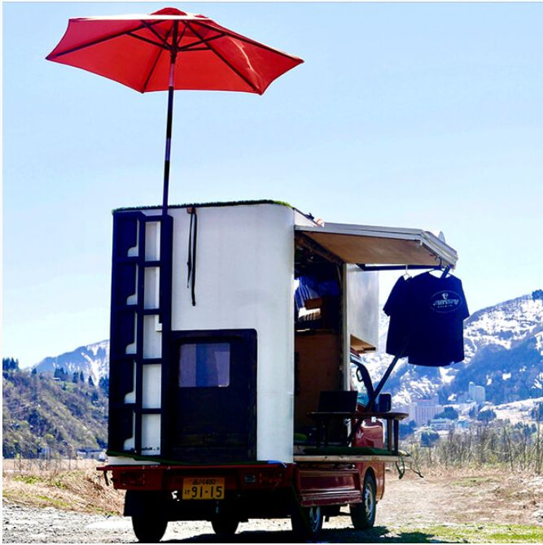
アルベルゴはイタリア語でホテル、デフューゾは分散。分散したホテルという意味になる。１９８０年代にイタリアで始まったとされる過疎になった街の空き家を改装してホテルにする活動のことを指す。一軒だけではない。フロントと宿舎、ロビー、レストラン、喫茶、画廊などが複数に分散していることが多い。町並みや美術の案内をしてくる人がいることも多い。
今では認定委員会があり、イタリア中に広がっている。ローマに近いラツィオ州のソット・ステッレでは、村の中心広場から、美しい渓谷をのぞめ、ガイド付きのノルディック・ウォーキングを楽しむこともできる。味覚体験、宗教や文化にまつわる見学もできる。トスカーナ州のポッジョ・アッラ・ロッカでは世界遺産オルチャ渓谷とワイン産地として名高いモンタルチーノを見晴らす360度パノラマの高台に５軒のアパートメントが貸し出されている。現在のオーナーはワイン通で地元のワインを提供してくるという。
日本にも近しい試みがある。東京高円寺にある小杉湯は平日でも３００人を超す入浴者が集う。小杉湯には、地元の主婦、老人、子供たちが集う。近所の主婦がかわるがわる子供たちの面倒を見、老人が躾を担当する。保育園や学童を補完する役割を果たしている。
高齢化と独居化が進む中、入浴することさえ困難な人が増えている。一人のために浴槽にお湯を張るのがためらわれるのだ。食事も同じだ。一人分の食事を作るのはなかなか大変なことだ。銭湯や食堂が家庭の機能を補完する活動はアルベルゴ・デフューゾに通じる。大きく見れば、町全体が家庭になっているようなものだ。
地元の老人や独居者に外国人が混じっていても変わらない。ホテルや旅館でなくても滞在するために必要な機能は果たせるのだ。
滋賀県の大津には「講 大津百町」というホテルがある。宿泊場所は街の古い建物を再建したものだ。食事は街の諸所のレストランですることが推奨されている。ここのホテルの宿泊費には街への寄付が含まれている。昔ながらの風情を残しつつ、快適な宿泊施設に改装するには一般のリノベーションよりも多くの費用が掛かる。新築するよりもかかっている。当然宿泊費も高くなる、それにさらに寄付が加算されている。つまり、不要層しか泊まれない施設なのだ。しかし、富裕層から、活性化しない町にお金が流れる仕組みを作っている点は興味深い。
歴史を振り返ってみると、江戸時代の参勤交代は、諸藩に多くの出費を強い、財政ひっ迫が起こった。その分、街道筋の宿場は賑わい現金流通が促進された。江戸幕府自体も多くの寺社の修復や大奥の維持に出費を重ね屋台骨が揺らいだ。こうした出費が庶民に回り、まさに経済が成り立った。経済の語源どおりの経世済民（世を経（おさ）め、民を救う）だ。財が残らない仕組みが社会に内在されていたのだ。財を貯め込まない仕組みが人々の幸福度を高めていたのではないだろうか。
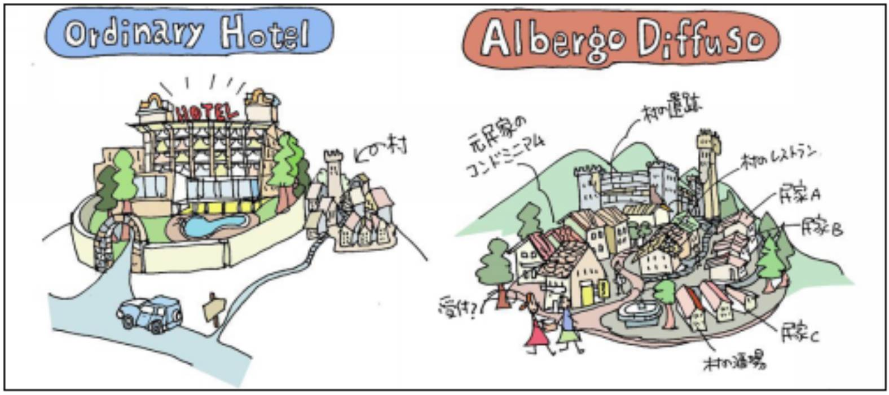
図 10 トゥッタ・イタリアより http://borghi-italia.com/about/
〇 猫バス
宮崎駿の映画に猫バスが描かれている。猫のおなかが客室、座席になっている。現実にはあり得ない。猫とバスを組み合わせる発想はドラえもんやジャングル黒べえなどにも頻出する空想手法だ。
映画の状況はおそらく、幻覚か夢であろう。芸術作品として設定には全く問題ない。では現代のテクノロジーとしてバイタル情報の取得とヴァーチャル・リアリティーを活用して、猫バスを再現することに価値はないだろうか。
何かこころにショック状態が訪れた時、スマートフォンから投影が起こり、猫型バスが助けに来てくれたら救われることはないだろうか。
実装することも可能だ。
こころで呼ぶとバスが来るということだ。
トトロの森で子供たちが繰り返し見る幻想は、ある種のトランス状態といえる。実際には起こっていないことが記憶として残っているのだから。木々の分泌物や空気中を漂う菌類の胞子、菌糸は、こころの平静を崩した子供たちに幻覚的にカタルシスを供給しているのではないだろうか。
我々の衣服の多くは、綿５０％、ポリエステル５０％などのように自然繊維と化学繊維が混ぜた布地からできている。化学繊維の方が環境負荷が大きいのだろうと思うと、大きな間違いだ。もっとも大きな環境負荷を発生させているのは綿花だ。
綿花は、葉がついたまま収穫すると繊維に葉が混じってしまうので、綿花の木を枯らしてから収穫する。枯らすために大量の枯葉剤を残布する。枯葉剤を散布するため土壌が弱っていく。そのため大量の肥料を使う。
綿花の作付面積は農産物全体の２．５％程度である。そこに全世界の農薬の５％から１０％が散布されるという。生産量は中国、インド、米国、パキスタンで５０００万トンが生産される [32]。米国を除く国々では労働環境は極めて悪く、農薬による健康被害が多発している。
今現在は、種子と農薬を両方売るモンサントのようなバイオ化学メーカーが品種改良を武器に悪行三昧だ。モンサント製の種子はモンサント製の農薬に耐性がある。モンサント製の農薬は非常に強力であたり一面のモンサント製以外の種子からできた植物をすべて枯らしていく。モンサント製の種子と農薬を使わない農家にも近隣のモンサント製農薬が飛散し商品となるべき農産物を枯らしていく。天を恐れぬ悪行としか言いようがない。
農薬を使わずに、綿ができたら自然に枯れてくれる綿花ができたらどんなに良いことか。その種子が独占されずに農家が使えたらどんなに良いことか。
小坂鉱山の再生は0次の在り方として参考になる。小坂鉱山の歴史を振り返ってみよう。
江戸時代から金、銀の鉱山として知られていた小坂鉱山は、明治期に銀、銅、亜鉛などの鉱山として発展した。その後、採掘量が減少し、１９９０年には閉山となった。しかし、ここで精練をしていた小坂精練は培ってきた黒鉱といわれる複雑硫黄鉱から複数の金属を取り出す高い技術をもとに、金属リサイクル事業に乗り出した。現社長の光根裕（みつね・ゆたか）氏は「リサイクルされる基板や携帯電話は、異素材が混在しているため、そこから効率良く複数の金属を取り出すことは難しいのです。しかし弊社には黒鉱で培った製錬技術があり、これまでの設備に改良を加えることで対応できたわけです」と語っている [13]。港に近い精練所は海外から鉱石を輸入して精練するが、内陸の鉱山に立地した精錬所は鉱山の鉱石を使わざるを得えない。鉱山が閉山となれば普通は製錬所も閉鎖となる。小坂精練はそれを乗り越えたまれなケースである。現在は年間金６トン、銀４００トン、レアメタル２０種類を金属の再生利用から産出している。世界の金需要は毎年およそ４０００トン、銀に至っては工業用だけで２万トン近くあることに比べれば大きな数字ではない。しかし、リサイクルしてこれだけの金、銀を取り出しているのは注目に値する [14] [15]。
小坂精練は２０１１年には米国のビジネス誌『Fast Company』において「世界の最も革新的な企業」第１４位に選出された。
小坂精練がある小坂町には、現在、小坂精練を含めたＤＯＷＡグループの金属リサイクル企業が集積し、リサイクルコンビナートの様相を呈している。
金属リサイクルは、電気を使うのでＣＯ２が発生する。今後、電気をできるだけ使わない金属リサイクル技術の開発が求められる。
小坂町では、環境観光にも力をいれていて、産業遺産の展示や体験型プログラムの整備も進められている。また、生ごみの堆肥化や菜種油搾りかすによるバイオディーゼル燃料の生産も進めている。金属だけでなくバイオマスによるエコも対象としているのだ。観光も、菜種油販売もまだ軌道には乗っていないが、金属だけでないエコの広がりが目指されている。
０次都市に近い方向性の街として秋田県の鵜養地区を紹介する。鵜養地区は秋田県秋田市から自動車で３０分ほどの山間の地域。２つの川が流れ込み水量が豊か。川の上流には民家がなく、清涼な水に恵まれている。人口９０人。平均年齢は７０歳。世帯数４０軒。２０軒のかやぶき屋根の民家が残っている。
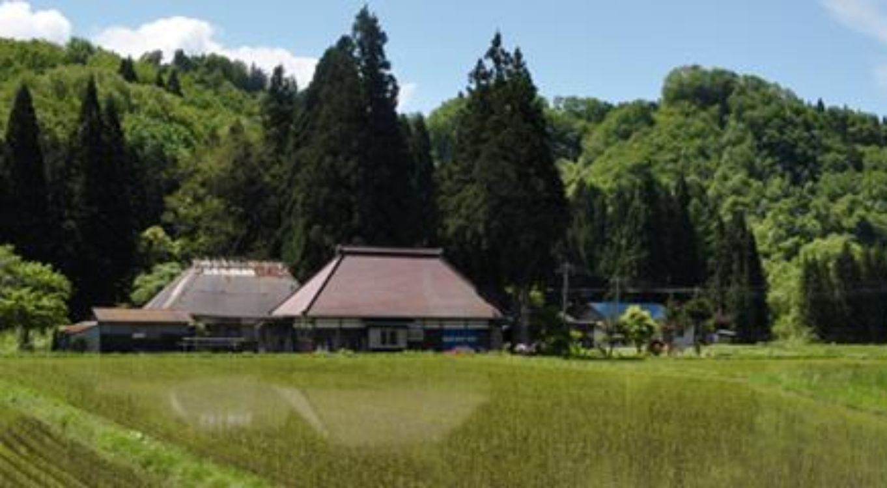
以前は四十町歩あった米作水田は二十町歩まで減少していた（田んぼが４００枚から２００枚に減少）。現在は近隣の酒蔵新政酒造の酒米栽培などで、２７町歩まで戻している。
新政酒造自身も、最大３２億円だった売上が、日本酒離れのなか、現八代目が蔵を引き継いだ２００８年頃には５億円まで落ちこんでいた。八代目になって、多くの酒蔵がやっている工業的な日本酒造りから離れ、速醸酒母（石油由来の乳酸）を使わない、生酛（きもと）による伝統的な酒造りに切り替えた。
新政酒造は現存する最古の天然清酒酵母、６号酵母を伝えていた酒蔵であった。精米による米の削り部分を４％にまで縮小した古典製法の日本酒を開発するなど技術革新で注目されている（一般的にはたくさん削るほど雑味のない清麗な味になるとされている）。
削り部分を少なくして良質な日本酒を作るには良質な酒米を原料とする必要があった。一説には、削りを多くして味の良い日本酒を作る手法は、使えない部分が多い悪い酒米から、少ない酒造りに向く部分だけを削り出す酒造りともいわれる。新政酒造は、無農薬、無肥料の厳しい環境で作られた、強い良質の酒米から、削り落とす部分を少なくして日本酒を作ることを目指した。結果が削り部分４％という酒米を使い切る酒造りだ。
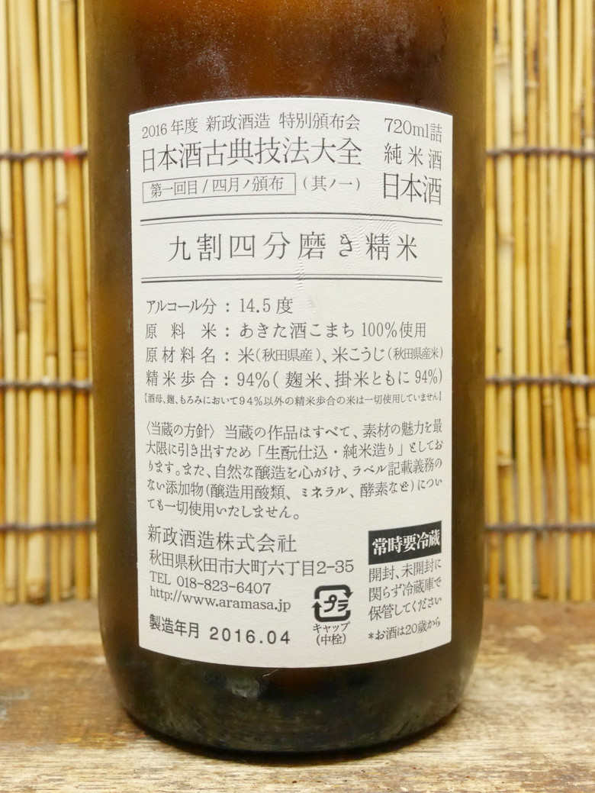
無農薬、無肥料の栽培は、土壌細菌群を豊かにし、豊潤な味を持ち、かつ病虫害に強い稲を生育することにつながる。これこそが目指すべきバイオテクノロジーではないだろうか。
また、新政酒造では、鉄にケイ素を塗布したホーロー製のタンクを使わず、杉の大樽による醸造を行っている。杉はホーローと違い生きている。そのため、さまざまな菌が樽内に繁殖する。様々な菌が繁殖することで、より複雑な味わいが生まれる。様々な菌のうち、害があるものを少なくし、益があるものを増やす様々な工夫がされている。ここにもバイオテクノロジーが息づいている。
大樽は、現在、大阪府堺市の木工所が製造している。この制作技術を習得し地元で製造することを目指している。また、杉自体も、鵜養地区で育ったものを使うことを目指している。夏・秋には米を作り、冬・春には酒をつくることで地域の産業を年間を通して稼働させる構想だ。地産地消の拡大である。
鵜養地区が、秋田県の中心あたりにあるということで、昭和６０年に、秋田県内の青年グループが「辺岨（へそ）神社」を建立し、周辺を「へそ公園」とした。一時はへそ祭りが行われていたが、今は途絶えている。地域の文化の継承として復活が待たれる。
この地区に排気ガスをまき散らす自動車がたくさん走る姿は似つかわしくない。耕作を補助する電動機はあるとしても、日常の移動には、自転車がよさそうだ。祭りにたくさんの人が来る必要もない。どうしてもこの地区のことを知りたい人が訪れればよい。
この素晴らしい土地に住むことは特権だ。土地を買ったから家を買ったからといって、この土地に溶け込まずに住むことはできない。むしろ、数年だけ滞在して、この土地の生活、この土地の農業、この土地の酒づくりを学ぶ人が交代にやってくるのがよいだろう。その中から何人かが選ばれて残っていくのがこの土地のあり方ではないか。鵜養治地区には０次都市の姿を垣間見ることができる。
〇 秋田の稲作
田沢湖在住ミミの詩
雪がまた完全に溶けきらない頃から田んぼにでかけ、
馬を使って堆肥をすきこみ、春の田起こしに備える。
田植えの頃でも泥が冷たすぎて手がかじかみ、
自分のお小水で手を温めながら女性たちは田植えをしたとも。
そんな苦労をして育てた米も天候次第で、一瞬にして無きものになってしまう。
この繰り返しの中で、自然への祈りと感謝が生まれ、
それが祭りというかたちになっていった。
かすりの作業着も年配の方と若い女性では模様が異なる。
田んぼに出る際、未婚の若い女性の脚絆の紐や作業着下の襦袢の襟元は、
朱のさし色を使っておしゃれを自己表現。
朝日と共に仕事を始め、日が落ちたら身体を休める。
農作業は月暦（神社暦）に従って行う。
過去より稲作で生きてきた秋田は、
そういう意味ではお神様に近くあると感じてきた。
米づくりは何から何まで一人で出来る事なんてない。
「力を合わせて生活している」と言う自覚が
この現在においても地域に引き継がれている。
作物も人も祈りも、太陽と月に添っていた。
ＡＩで圃場（ほじょう）の水や追肥などの管理が出来るようになっていくのは
大変便利な事でやった方がいいとは思う。
一方で祈りや感謝はどこに行くのだろう。
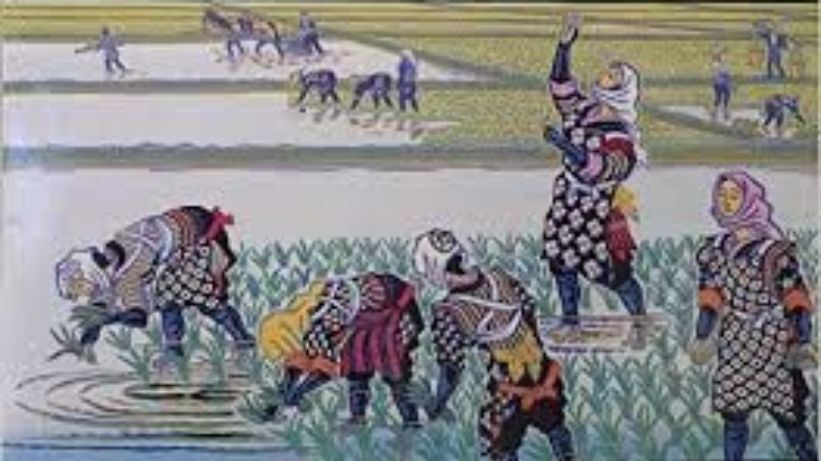
広島県立安芸南高校サッカー部の活動が面白い。この活動は、監督の畑喜美夫氏によってボトムアップ理論と名付けられている。畑監督は、選手時代は全日本に選抜され、指導者としてもインターハイ優勝に導いた実績がある。畑監督は全国で講演され、著書もある。部活動の見学希望者も後を絶たない。畑氏のボトムアップ理論を取り入れているサッカー部、サッカー以外の部活動、企業が増えている。
ネット上に多数の取材記事があり、まとめてみた。
まず、サッカー部の理念は「サッカーを通じて社会に通用する人間力を高めること」となっている。勝利至上主義ではない。
部活動の特徴を上げてみる。
雨が降って練習が中止になると「やったー」と喜ぶということはないだろうか？上手くなりたいなら困るはずではないか。ほんとうは練習が楽しくないのでは。楽しくない生活、楽しくない部活でよいのだろうか。平日５日間のうち、練習は２日！（このやり方でインターハイ日本一になった実績がある）。残りの３日間は何をしても自由。自主練習をする選手も多い。
本当はよくわかっていないこと、納得していないのに「はい」といって言ってしまうことはないだろうか。入部したとき、「あれをしなさい」「これをしなさい」とわれれば「はい」と答えてしまうだろう。これが続くと「はい」が習慣になってしまう。学校や部活はそうなっていないだろうか。「はい」からは部員の本当の心の中は見えない。最初は監督や先輩を含めお互いの言動や行動を観察することに努める。そうやって心の奥にあることを掴んだ上で、関係性をスタートさせる。
まず「いいえ」と言える練習をする。なんでも「はい」と言っていては対話にならない。本音で語り合うには、年齢が低くても気が弱くても「いいえ」と言える環境づくりが大切。年長者は若年者が意見を言える環境を作ることに努める。畑氏の部活では、試合中は上下関係なく､しっかり声をかけあってプレイして､ピッチから出たら上下関係をつけている。
上級生の役割はなんなのだろうか。上級生はになればなるほど、目的意識を先鋭化することが役割となる。試合に勝つ、県大会に出場する。全国大会に行く。日本一になるというチームの目標にむかって、いっさいの無駄を排除して取り組む姿勢を学んでいなくてはならない。新入生が入ってきたら、新入生の才能をつぶさに観察しなくてはならない。自分が選手になることは最上位の目的ではない。チームが強くなることが最上位の目的だ。そのために、どの才能を使えば勝てるのか、どんな練習をすれば才能を開花させられるのかを考えなくてはならない。
試合のスターティングメンバーについて監督は口出しせず、１年、２年、３年の全部員の話し合いで決める。人選にあたりマイナス評価をすることはなく、プラス評価で決める。そうすることで、誰も存在を否定されることなく、もっと頑張ろうとなり、チーム全体のレベルが徐々に上がっていく。
いろいろ話し合って、決めきれない時は、キャプテンが決める。その時は、なぜ彼が選ばれるべき選手だったのかについて必ず説明をする。キャプテンになった選手は最初大変に思う。しかし、すぐに慣れる。
練習試合をするときは、ハーフタイムに互いのチーム同士で手の内を明かし合うそして互いにそれが上手くいったのか、ダメだったのか、もっとレベルアップルするにはどうすればいいのかを話し合って後半を戦う。ミーティングはファシリテーターという司会役が仕切り、みんなの意見を引き出す。
整理整頓はミリ単位で行う。毎日漫然と同じことはやらず、毎日コンセプトを決めて、一から考えて整理整頓する。ミリ単位の精度の感度を高めることで、パスやシュートもミリ単位で考えられる感性が育つ。
サッカー部が強くなっていくので、他の部活の部員が興味を持ち始め、バレー部やバスケット部、そして野球部にも伝番し、結果的に学校全体が観察と対話のできる部活になっていった。
似た組織運営は、米国でもホラクラシーやティールと呼ばれて注目されている。
〇 二巡目の人生
現在の教育の仕組み、組織の仕組みの中では、年齢を重ねるほどに肩書を積み上げていく。どこどこ小学校卒業、どこどこ中学校卒業、どこどこ高校卒業、大学はここ、勤め先はここ、勤め先でも役職を上げていく。部活は何で、部活ではどこのポジションで、どういう成績を残して、資格は何を持っていて．．．。知識や体力をひたすらに競争して肩書を積み上げる。結果、積み上げた肩書が求める行動様式に縛られて、あたかも社会の歯車のように生活する。
学歴はまだよい方で、家柄という非常に固定度の高い肩書がまかり通っていた時代も長かった。どこの社会でも、衰退すると立て直しのためには、身分を問わない人材の登用を行う。つまり、身分に固執していると才能を発掘できないということだ。身分は自ら自身の無能さを証明している。
ほとんどの社会で肩書を積み上げる人たちが先祖代々徒党を組んで権力をつかもうとしてきた。その影響は、肩書を積みあげる生き方をしない人たちを排除する圧力にまでなっている。
その肩書を捨てて、現在の自分の能力、見識、経験だけになって、いわば、素の自分になって、社会に貢献してみてはどうか。肩書を捨てることは怖い。今まで自分がやってきた、わかってはいるが、直視したくなかった、肩書がない人たちを排除する行動が恐怖をそそる。肩書きがない人を受け入れない自分の心の闇が恐怖を増殖させる。
捨ててみなくては肩書がない人たちの心のうちはわからない。肩書がない人たちとともに生きてみてはどうか。捨てるかどうかは自分が決めるだけで今日にも明日にもできる。
自分が捨てないのなら、ほかの人も捨てないだろう。それでは社会は変わらない。社会が変わらない真の原因は自分の心の内にある。
肩書を捨てればいままで得ていた収入に根拠がなかったことがわかる。買いたいものも買えなくなる。食べたいものも食べられなくなる。それこそが足るを知る社会だ。足るを知る社会を標榜して、自分はそこに行かないという道はない。地球もろとも滅びるか、自分が変わり自分が足るを知る生き方を選ぶか。選択はそこにある。
日本の社会の場合、６０歳定年という制度があり、６０歳を過ぎると６５歳くらいまで嘱託として給料は下がるが働くことができる。役員になっている人は７０歳まで働くこともできる。６０歳で会社を去っても６５歳で去っても７０歳で去ってもあまり変わりはない。それまで１つの世界で生きてきたので、別の世界になじめない。最初は、シニア起業だ、顧問だとのぼせ上がるが、うまくいかず１年、２年で余生に入ってしまう人も多い。
逆に、転職を繰り返したり、起業を経験したりした人は、環境が変わってもあまり苦労しない。問題なのは、１つの環境で生きてきてしまった人達だ。長期雇用は経済のためにはメリットが多いが、個人のためにはデメリットが多い。２つ目の人生が始められなくなってしまうのだ。
６０歳、６５歳、７０歳で野に放たれて、茫然としているシニアが死にきれないシニアだ。死んでしまったのにまだ生きたい人たちだ。人生１００年と言われる中、長い時間を死にきれずに生きていかなくてはならない。
新卒で入った会社にいてよいのは、遅くても４０歳だという説もある。それ以上になると、頭も心も１つの価値観に支配されてしまって、他の世界で生きていけなくなってしまう。
以前の会社での安定した日々を忘れられないのだ。野に放たれたら安定などない。どうしても、「前は良かったなー」と感傷にひたってしまう。
感傷に打ちのめされたときに、死にきれないシニアで甘んじるか、もう一回、ゼロから泥にまみれてみるかの違いは大きい。もう一回ゼロからというのも０次産業革命の要件かもしれない。
ゼロになっても、若いころのように、新しいことは覚えられない。年下にバカにされる。屈辱に耐えなくてはならない。まさにゼロからのスタートだ。６０歳で１回目の人生が終わって、それから２回目の人生を４０年。長く、不自由で、つらい。
周りには悠々自適の同年代もいるだろう。悠々自適より、泥にまみれる人生の方が、間違いなく輝いている。悪魔のささやきに騙されてはいけない。そこに本物の人生がある。
あきらめてはいけない。自分が１巡目の人生のとき、何も知らずに、若い人たちに掛けてきた言葉「あきらめるな」を自分にかけ続けよう。
〇 ギラギラした老後
横石知二氏は徳島県農業大学校園芸学科卒業後、徳島県上勝町農協に営農指導員として就職。１９９１年に上勝町役場に転籍。山の資源を生かした商品開発で全国的に注目を浴びている。横石氏が注目したのは葉っぱ。横石氏は、葉っぱを料亭の器のツマモノとして販売することを考えた。準備として器にあったツマモノの大きさ・美しさ、季節感の表現方法等の商品知識やノウハウを習得するため、自費で約２年間料亭に通いつめていた。現在は葉っぱ販売を取り強いる株式会社イロドリの代表取締役に就任している。
現在ツマモノは３２０種以上あり、一年を通して様々な葉っぱを出荷している。売上は３億円に迫る。この葉っぱ集めの担い手は、地元の老人たち。特におばあちゃん。なかには年間に１０００万円以上売りさばくおばあちゃんもいる。山で拾ってくる葉っぱなので原価は配送費だけ。粗利は高い。おばあちゃんは一刻を争って山を駆けまわる。良い葉っぱは奪い合いだからだ。集めた葉っぱの写真を撮ってアンドロイドタブレットから販売サイトに上げる。
おばあちゃん曰く、「自動運転はいつできるんですか。結構きついんですよ上りが」「ドローンで葉っぱを拾えないですかねー」なんとも行けてるおばあちゃんだ。儲けたいというのは人間の根源的欲求のひとつなのではないか。
おばあちゃんたちはタブレットを使いこなしている。高齢者だからできないということはないのだ。
おじいちゃんよりおばあちゃんがアクティブであることも興味深い。女性の強さがここにもあらわれている気がする。
おばあちゃんだけではこの活況は実現しなかったろう。仕掛け人の横石氏の存在が大きい。仕掛けがあれば高齢化問題も解決に向かう。
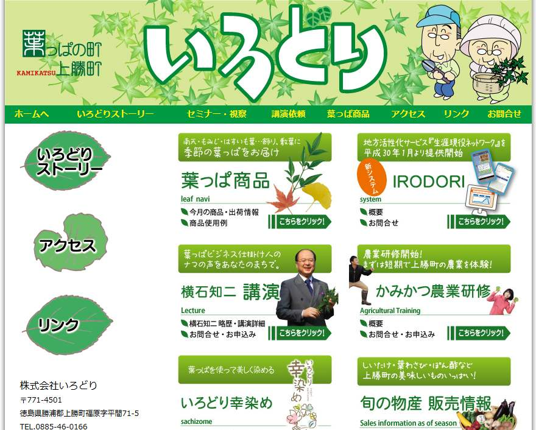
〇 バーニングマン
砂漠気候の厳しい環境下に１週間だけ、数万人が集まり、隣人たちと助け合いながらアートを表現する場が出現する。商行為は明確に禁止され、見返りを求めない「贈り物経済」だけが認められる。物々交換や物とサービスの交換さえ好ましくないとされる。
参加者は、必ずマイ・カップを持っている。そこに飲み物や食べ物が注がれる。見返りは必要ない。参加者は自分が提供できるものを持ち込む。
３０年以上にわたって続くバーニングマンというイベントだ。失恋の喪失感を晴らすために海岸で人型人形を燃やしたことから始まった。日中は３５度に迫る高温で主な活動は夕方から早朝に行われる。夜間は、ネオンの世界となる。移動は自転車が主で、夜間のためにLEDで装飾をする。LEDなしでは自己の存在を主張できない。
昼は荒涼たる『マッドマックス [ii] 』の世界、夜は光り輝く『トロン [iii] 』の世界。子供に帰った大人が歓喜する。
注ii 凶悪暴走族と取り締まり警官マックスの復讐劇が第一作（１９８２年）。以降、荒廃し砂漠化した未来世界のバイオレンスムービーとしてシリーズ化された。
注iii コンピュータープログラムを擬人化し、圧政に苦しむプログラムをコンピューター世界に送り込まれた主人公が開放する物語。コンピューターグラフィックスによる光を中心とした映像が美麗（１９８２年）。
米国ネバダ州リノから車で５時間かかる荒涼たる盆地が会場だ。アルカリ塩が堆積してできた土地にはサボテンすら生えず、サソリもゴキブリも生息しない。アルカリ塩の濃度は高く、素足では足が腫れ、手指の皮膚はボロボロになる（個人差がある）。開催時期は８月の終わりから９月最初の月曜日（米国のレイバーデイ）まで。この時期日中の気温は３５度に迫り、夜間は５度まで下がる。日中は砂嵐が吹き荒れることもあり、暴風に野営のテントが飛ばされることもある。いったん豪雨になると、ドロ沼となり身動きが取れなくなる。
図 17 バーニングマン／ブラックロックシティー Reuters
乾ききった湖底の泥は砂というよりは小麦粉や消石灰のような細かい粉末でテント内や車内に侵入し、衣服や靴の繊維の中にも入り込む。カメラやパソコンなど精密機械はしばしば故障する。砂嵐の際は粉塵ゴーグルなしでは目を開けることもできず、呼吸には防塵マスクが必要となる。
地形的に外部の世界から遮断され、電気、上下水道、電話、ガス、ガソリンスタンドなどの生活基盤はない。テレビ・ラジオ放送、携帯電話などもサービス提供範囲外。主催者側が用意するのは、自然環境保護のために必要な仮設トイレ群と食料の鮮度を維持するための氷のみ（氷は有料かつ運搬が大きな負荷）。
会場にはお金を払って物やサービスを買う売店や屋台、食堂などは一切ない。参加者は、自家発電で電力を賄い、カセットコンロで調理する。食料はクーラーボックスに保存する。そんな環境でも食生活は意外と豊かだ。それぞれが食事を作り、皆にふるまっている。かき氷が一番人気だ。レトルトでない手製の料理も豊富にある。
参加者は、水、食料、衣類、住居、燃料など、自らの生存に必要なもの全てを準備し自然と対峙する。
参加者は、絵画や彫刻などの制作。演劇、ミュージカル、パントマイム、舞踊、サーカス、楽器演奏などの上演。大道芸や仮装、集団パフォーマンス、パレード、ＤＪなどを自由に行う。また、アルコール類や料理の提供もある。ボディペインティングも多く、半裸、全裸の集団も多い。座禅や瞑想、ヒーリングなども行われる。また会場には簡易の飛行場が開設されセスナでの遊覧飛行、スカイダイビングなども行われる。
こういった活動に参加し積極的に人の輪に加わっていくことや、自ら独創的な活動を企画し、実行してみようという姿勢が高く評価される。逆に、自分では何もせず、ただ「バーニングマンを見にきた」という第三者的態度は恥ずべきことだとされる。
開会と閉会の際の渋滞交通整理や現地でのチケット発券、入場ゲートでのチケット確認、セキュリティ・チェック、インフォメーション・ブースや遺失物集積所、センターキャンプ・カフェでの接客など、様々な運営上の仕事は、参加者有志がシフトを組んで対応する。雇用関係は存在しない。
開場は無数のキャンプを単位に生活が営まれる。冷房完備のホテルのような設備を作る一群の参加者もいれば、キャンプにさえ属さず放浪するものもいる。巨大なオブジェやドームは参加者がすべて持ち込む。設置には数千万円から数億円かかるともいわれる。
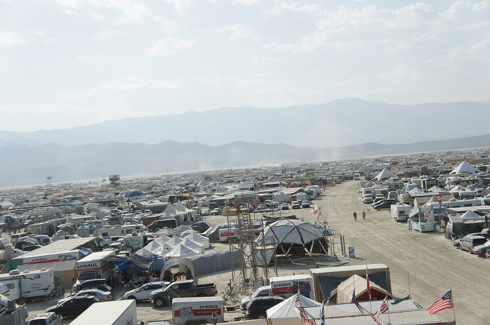
興味深いのは、掃除を完了しないキャンプは評価を下げられて次年度の参加可能人数を減らされるという仕組みだ。何をしてもよいが自分で始末しなくてはならないのだ。
他者への思いやりだけで社会を成り立たせることは、原始に帰ることであって、未来に進むことでもある。さまざまな機材を持ち込み自然の猛威の中、開放的にとらわれずに生き抜く。原始に戻り、半裸で生活し、限界域で日々を過ごす。中心にあるのはアートする心。これはまさに懐かしい未来ではないか。
東洋の東の端の湿潤な島国で、恵まれた森林環境の中で独特の文化を形成した日本から、地球環境の危機に際してできる限りの発信をしたいと思って０次の活動は進んでいる。０次の考え方を西洋の人に押し付ける気はない。参考になることがあれば幸いだ。
本来はこの後、ロードマップを作って、０次の考え方を広めていくべきだろう。しかし、それは、０次の考え方に合わない。合理的で西洋的すぎる。０次の考え方を受け継ぐのは、偶然０次を知った人だけでかまわない。偶然の確率を高める努力はしていく。せめて、翻訳版くらいは作っていかなくてはならないだろう。
０次の考え方について、学識的な検証も必要だろう。しかし、それもあえてやらない。学識的な活動が、作り出したのが、現在であり、現在への危惧が０次の出発点だからだ。間違っていることは素直に直す。しかし、理屈が通っているからと言って世の役に立つとは限らない。０次の世界に必要なことは、理屈を超えたものだろう。世の中には理屈では理解できないことの方が多いのではないか。それを無理やり理屈で筋を通そうとして、無理に無理が重なっているのではないか。
０次では素直な気持ちを大事にしたい。素直な人間はエゴや欲望が強いかもしれない。それを乗り越えていくのが０次の生き方だ。宗教に近いかもしれない。宗教は膨大なエネルギーを費やして、何千年の月日をかけて人類の幸福のために活動をしてきた。しかし、なぜか世界は平和にもなっていないし、幸福にもなっていない。宗教は正しく、途中で入ってきた資本主義が間違っていたのかもしれない。
素直な感情と自然への畏怖をもって、我々の科学と宗教と資本主義を見直してみたい。 考えに賛同いただける方は心から歓迎します。
２０１８年１０月２０日
柴田英寿
1. 江戸時代の林政～「治山治水」を中心とした実学に基づく事実追求～. 森林問題の深層◆３） : http://blog.sizen-kankyo.com/blog/2013/09/1388.html.
2. 東北大学大学院環境科学研究科. 環境文明論 講義概要. 出版地不明 : http://www.kankyo.tohoku.ac.jp/student/c-lecture.html, 2014.
3. 平成23年版 環境・循環型社会・生物多様性白書.
4. 世界鉄鋼協会. 出版地不明 : https://www.worldsteel.org/en/dam/jcr:3e275c73-6f11-4e7f-a5d8-23d9bc5c508f/Steel+Statistical+Yearbook+2017.pdf, 2017.
5. 経済産業省. 出版地不明 : 日本鉄鋼連盟資料等より推計 https://rnavi.ndl.go.jp/research_guide/entry/theme-honbun-400333.php http://www.meti.go.jp/committee/summary/0004513/pdf/2012_04_03.pdf, 2012.
6. 日立金属. たたらの歴史. 出版地不明 : https://www.hitachi-metals.co.jp/tatara/nnp020606.htm.
7. CNN. クジラの胃に３０キロのごみ、消化できず死ぬ スペイン. CNN. 2018年04月12日, ページ: https://www.cnn.co.jp/fringe/35117629.html.
8. 世界経済フォーラム. A new $2 million prize to stop plastic waste taking over the oceans. 2018.
9. ロイター. 英米チームがプラスチック分解酵素を偶然製造、環境対策に期待. 2018年4月18日, ページ: https://jp.reuters.com/article/enzyme-idJPKBN1HP02O.
10. 国連世界観光機関（UNWTO）統計.
11. CareNet. スマホは若者を不幸せな気持ちにする？ CareNet. 2018年Feb月2日.
12. mining-technology.com. Grasberg Open Pit, Indonesia. 出版地不明 : https://www.mining-technology.com/projects/grasbergopenpit/, 2009.
13. esriジャパン. 巨大な鉱山 採掘によって作られた地形. 出版地不明 : https://www.esrij.com/news/details/76711/.
14. Renewable Energy Network for The 21st Century. RENEWABLE GLOBAL FUTURES REPORT. 2017.
15. US Global Investors. 2015年June月29日.
16. 放射線医学総合研究所. ページ: http://www.nirs.qst.go.jp/db/anzendb/NORMDB/PDF/76.pdf.
17. 経済産業省委託調査. 平成２６年度製造基盤技術実態等調査 . 出版地不明 : http://www.meti.go.jp/meti_lib/report/2015fy/000560.pdf, 2014.
18. 日本経済新聞社. 資源争奪が変える「ものづくり」産業部編集委員後藤康浩. 出版地不明 : https://www.nikkei.com/article/DGXNASDD12036_S0A011C1000000/, 2010.
19. 竹元博幸京都大学霊長類研究所研究員. 人類が地上に降りた理由、森の気温と季節の出現によるものか －チンパンジー、ボノボの生活様式から仮説を提示－. 出版地不明 : http://www.kyoto-u.ac.jp/ja/research/research_results/2017/170718_1.html, 2017年07月19日.
20. Housing Through the Centuries. 出版地不明 : https://youtu.be/GoCZnboThfk.
21. 国土交通省. 海外における下水道の歴史. 出版地不明 : http://www.mlit.go.jp/crd/sewerage/rekishi/04.html.
22. United Nation World Urbanization Prospects. 2012, 2014.
23. イヴォン・シュイナード/森摂訳. 社員をサーフィンに行かせよう "let my people go surfing". 出版地不明 : 東洋経済新報社, 2005(原著), 2015(日本版).
24. 長島孝行. バイオミミクリーの可能性. 出版地不明 : https://www.jbgroup.jp/link/special/224-2.html.
25. ＩＥＡ. 再生可能エネルギー2018. 出版地不明 : https://www.iea.org/renewables2018/, 2018.
26. IPCC. IPCC第4次評価報告書. 出版地不明 : http://www.env.go.jp/earth/ipcc/4th_rep.html, 2007.
27. 遺伝子で見る日本人のルーツ・ＹＡＰ遺伝子とは父親から息子に受け継がれるもの。日本女性妻に伝わらず？ 2006年11月6日, ページ: https://blog.goo.ne.jp/tamakouranai281-2/e/422ceac980bc3ce92019c7d7cae6cc99.
28. 一般財団法人日本綿業振興会. コットンと環境. 出版地不明 : http://www.cotton.or.jp/environment.htm.
29. 事業構想大学院大学. 鉱山閉鎖からの起死回生 世界が注目するリサイクル技術. 出版地不明 : http://www.projectdesign.jp/201409/pn-akita/001580.php, 2014.
30. ワールド・ゴールド・カウンシル. 2013.
31. トムソン・ロイターGFMS. シルバー・サーベイ. 2014.
32. 鈴木絢子. 地域資源を活用した振興策―秋田県小坂町を事例に―. 出版地不明 : 国立国会図書館 レファレンス, 2014.
33. 世界経済フォーラム. A new $2 million prize to stop plastic waste taking over the oceans. 2018.
図 1 ヴェルグル市労働証明書 http://www.lietaer.com/2010/03/the-worgl-experiment/
図 ２ モアイ像 イースター島「ラパ・ヌイ国立公園」 Wikipedia
図 ３ スサノオノミコトのヤマタノオロチ退治 日本略史・素戔鳴尊、月岡芳年、Wikipedia
図 4 クレーター状に掘り進められたインドネシアグラスベルグ鉱山、Wikipedia
図 10 トゥッタ・イタリアより http://borghi-italia.com/about/
図 17 バーニングマン／ブラックロックシティー Reuters
ずいぶん年をとったが、人生百年時代ではまだ半分。この年になってまだ２０代の学生に囲まれていることが一番の幸せ。囲まれているのは２０年にわたって勝手に学校をやっているから。周りに起業家が多く、社会と折り合いがつかない起業家と社会の間に立つことが多い。
自分の強みは誠実さと割り切り、誠実さで困っている人を助けているつもり。周りに起業家が多いのは、起業家が困っているからかもしれない。
最近はテキサスオースチンのＳＸＳＷや札幌Ｎｏ Ｍａｐｓに毎年参加して、都市イベントのパワーを感じている。砂漠の祭典バーニングマンにも参加し、見聞を広げている。
自作のギターが受けて、演奏に呼ばれることが多い。アマチュアギタリストとして各地で演奏している。
著者近影
Facebook： Hidetoshi Shibata
Homepage: http://www.mediafrontier.com/soulharmony/
{kind=link}